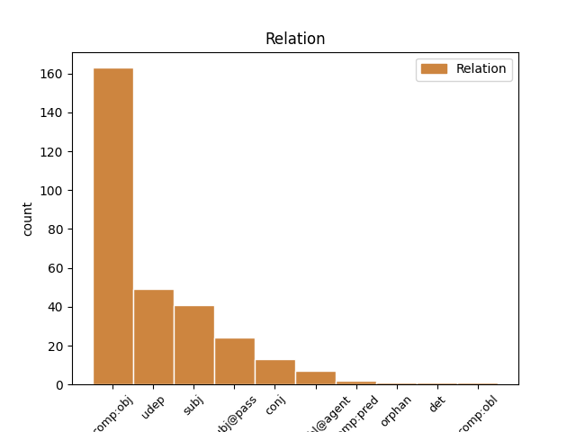
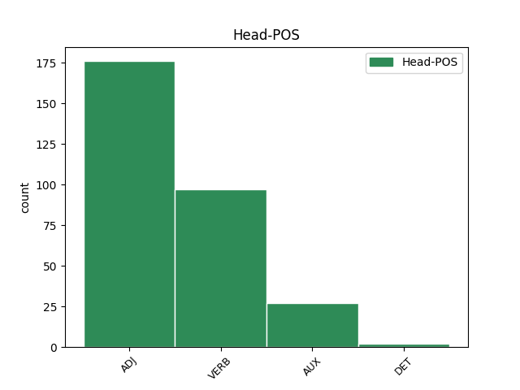
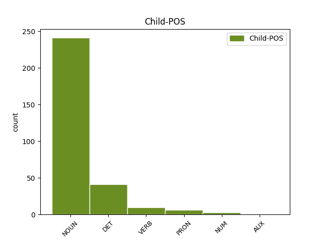

Distribution of features within this leaf



Agreement Rules sorted by frequency.
- When the dependent token is the direct object complements(comp:obj) of the head token, and the head token is ADJ and the dependent token is NOUN.
1 (3) _ _ _ _ 0 _ _ _
2 Pokud _ _ _ _ 0 _ _ _
3 cenné _ _ _ _ 0 _ _ _
4 papíry _ _ _ _ 0 _ _ _
5 emitované _ _ _ _ 0 _ _ _
6 účetní _ _ _ _ 0 _ _ _
7 jednotkou _ _ _ _ 0 _ _ _
8 podle _ _ _ _ 0 _ _ _
9 odstavce _ _ _ _ 0 _ _ _
10 1 _ _ _ _ 0 _ _ _
11 již _ _ _ _ 0 _ _ _
12 nejsou _ _ _ _ 0 _ _ _
13 obchodovány _ _ _ _ 0 _ _ _
14 na _ _ _ _ 0 _ _ _
15 žádném _ _ _ _ 0 _ _ _
16 z _ _ _ _ 0 _ _ _
17 evropských _ _ _ _ 0 _ _ _
18 regulovaných _ _ _ _ 0 _ _ _
19 trhů _ _ _ _ 0 _ _ _
20 a _ _ _ _ 0 _ _ _
21 přestaly _ _ _ _ 0 _ _ _
22 být _ _ _ _ 0 _ _ _
23 takto _ _ _ _ 0 _ _ _
24 obchodovány _ _ _ _ 0 _ _ _
25 k _ _ _ _ 0 _ _ _
26 jinému _ _ _ _ 0 _ _ _
27 dni _ _ _ _ 0 _ _ _
28 než _ _ _ _ 0 _ _ _
29 k _ _ _ _ 0 _ _ _
30 poslednímu _ _ _ _ 0 _ _ _
31 dni _ _ _ _ 0 _ _ _
32 účetního _ _ _ _ 0 _ _ _
33 období _ _ _ _ 0 _ _ _
34 , _ _ _ _ 0 _ _ _
35 účetní _ _ _ _ 0 _ _ _
36 jednotka _ _ _ _ 0 _ _ _
37 rozhodne _ _ _ _ 0 _ _ _
38 o _ _ _ _ 0 _ _ _
39 použití _ _ _ _ 0 _ _ _
40 mezinárodních _ _ _ _ 0 _ _ _
41 účetních _ _ _ _ 0 _ _ _
42 standardů _ _ _ _ 0 _ _ _
43 až _ _ _ _ 0 _ _ _
44 do _ _ _ _ 0 _ _ _
45 konce _ _ _ _ 0 _ _ _
46 účetního _ _ _ _ 0 _ _ _
47 období _ _ _ _ 0 _ _ _
48 , _ _ _ _ 0 _ _ _
49 v _ _ _ _ 0 _ _ _
50 němž _ _ _ _ 0 _ _ _
51 cenné _ _ _ _ 0 _ _ _
52 papíry _ _ _ _ 0 _ _ _
53 přestaly _ _ _ _ 0 _ _ _
54 být _ _ _ _ 0 _ _ _
55 takto _ _ _ _ 0 _ _ _
56 obchodovány _ _ _ _ 0 _ _ _
57 , _ _ _ _ 0 _ _ _
58 nebo _ _ _ _ 0 _ _ _
59 rozhodne _ _ _ _ 0 _ _ _
60 o _ _ _ _ 0 _ _ _
61 ukončení _ _ _ _ 0 _ _ _
62 jejich _ _ _ _ 0 _ _ _
63 použití _ _ _ _ 0 _ _ _
64 k _ _ _ _ 0 _ _ _
65 poslednímu _ _ _ _ 0 _ _ _
66 dni _ _ _ _ 0 _ _ _
67 účetního _ _ _ _ 0 _ _ _
68 období _ _ _ _ 0 _ _ _
69 předcházejícího předcházející ADJ AGNS2-----A---- Aspect=Imp|Case=Gen|Gender=Neut|Number=Sing|Polarity=Pos|Tense=Pres|VerbForm=Part|Voice=Act 0 _ _ _
70 účetnímu _ _ _ _ 0 _ _ _
71 období období NOUN NNNS3-----A---- Case=Dat|Gender=Neut|Number=Sing|Polarity=Pos 69 comp:obj _ SpaceAfter=No
72 , _ _ _ _ 0 _ _ _
73 v _ _ _ _ 0 _ _ _
74 němž _ _ _ _ 0 _ _ _
75 cenné _ _ _ _ 0 _ _ _
76 papíry _ _ _ _ 0 _ _ _
77 přestaly _ _ _ _ 0 _ _ _
78 být _ _ _ _ 0 _ _ _
79 takto _ _ _ _ 0 _ _ _
80 obchodovány _ _ _ _ 0 _ _ _
81 . _ _ _ _ 0 _ _ _
1 (5) _ _ _ _ 0 _ _ _
2 Za _ _ _ _ 0 _ _ _
3 období _ _ _ _ 0 _ _ _
4 počínající _ _ _ _ 0 _ _ _
5 koncem _ _ _ _ 0 _ _ _
6 rozvahového _ _ _ _ 0 _ _ _
7 dne _ _ _ _ 0 _ _ _
8 a _ _ _ _ 0 _ _ _
9 končící končící ADJ AGIS1-----A---- Animacy=Inan|Aspect=Imp|Case=Nom|Gender=Masc|Number=Sing|Polarity=Pos|Tense=Pres|VerbForm=Part|Voice=Act 0 _ _ _
10 okamžikem okamžik NOUN NNIS7-----A---- Animacy=Inan|Case=Ins|Gender=Masc|Number=Sing|Polarity=Pos 9 udep _ _
11 sestavení _ _ _ _ 0 _ _ _
12 účetní _ _ _ _ 0 _ _ _
13 závěrky _ _ _ _ 0 _ _ _
14 jsou _ _ _ _ 0 _ _ _
15 účetní _ _ _ _ 0 _ _ _
16 jednotky _ _ _ _ 0 _ _ _
17 povinny _ _ _ _ 0 _ _ _
18 uvést _ _ _ _ 0 _ _ _
19 v _ _ _ _ 0 _ _ _
20 příloze _ _ _ _ 0 _ _ _
21 v _ _ _ _ 0 _ _ _
22 účetní _ _ _ _ 0 _ _ _
23 závěrce _ _ _ _ 0 _ _ _
24 rovněž _ _ _ _ 0 _ _ _
25 informace _ _ _ _ 0 _ _ _
26 o _ _ _ _ 0 _ _ _
27 a) _ _ _ _ 0 _ _ _
28 skutečnostech _ _ _ _ 0 _ _ _
29 , _ _ _ _ 0 _ _ _
30 které _ _ _ _ 0 _ _ _
31 poskytují _ _ _ _ 0 _ _ _
32 další _ _ _ _ 0 _ _ _
33 informace _ _ _ _ 0 _ _ _
34 o _ _ _ _ 0 _ _ _
35 podmínkách _ _ _ _ 0 _ _ _
36 či _ _ _ _ 0 _ _ _
37 situacích _ _ _ _ 0 _ _ _
38 , _ _ _ _ 0 _ _ _
39 které _ _ _ _ 0 _ _ _
40 existovaly _ _ _ _ 0 _ _ _
41 ke _ _ _ _ 0 _ _ _
42 konci _ _ _ _ 0 _ _ _
43 rozvahového _ _ _ _ 0 _ _ _
44 dne _ _ _ _ 0 _ _ _
45 , _ _ _ _ 0 _ _ _
46 b) _ _ _ _ 0 _ _ _
47 skutečnostech _ _ _ _ 0 _ _ _
48 , _ _ _ _ 0 _ _ _
49 které _ _ _ _ 0 _ _ _
50 jako _ _ _ _ 0 _ _ _
51 nejisté _ _ _ _ 0 _ _ _
52 podmínky _ _ _ _ 0 _ _ _
53 či _ _ _ _ 0 _ _ _
54 situace _ _ _ _ 0 _ _ _
55 existovaly _ _ _ _ 0 _ _ _
56 ke _ _ _ _ 0 _ _ _
57 konci _ _ _ _ 0 _ _ _
58 rozvahového _ _ _ _ 0 _ _ _
59 dne _ _ _ _ 0 _ _ _
60 , _ _ _ _ 0 _ _ _
61 a _ _ _ _ 0 _ _ _
62 jejichž _ _ _ _ 0 _ _ _
63 důsledky _ _ _ _ 0 _ _ _
64 mění _ _ _ _ 0 _ _ _
65 významným _ _ _ _ 0 _ _ _
66 způsobem _ _ _ _ 0 _ _ _
67 pohled _ _ _ _ 0 _ _ _
68 na _ _ _ _ 0 _ _ _
69 finanční _ _ _ _ 0 _ _ _
70 situaci _ _ _ _ 0 _ _ _
71 účetní _ _ _ _ 0 _ _ _
72 jednotky _ _ _ _ 0 _ _ _
73 . _ _ _ _ 0 _ _ _
1 (3) _ _ _ _ 0 _ _ _
2 Účetnictví _ _ _ _ 0 _ _ _
3 účetní _ _ _ _ 0 _ _ _
4 jednotky _ _ _ _ 0 _ _ _
5 je _ _ _ _ 0 _ _ _
6 úplné _ _ _ _ 0 _ _ _
7 , _ _ _ _ 0 _ _ _
8 jestliže _ _ _ _ 0 _ _ _
9 účetní _ _ _ _ 0 _ _ _
10 jednotka _ _ _ _ 0 _ _ _
11 zaúčtovala _ _ _ _ 0 _ _ _
12 v _ _ _ _ 0 _ _ _
13 účetním _ _ _ _ 0 _ _ _
14 období _ _ _ _ 0 _ _ _
15 v _ _ _ _ 0 _ _ _
16 účetních _ _ _ _ 0 _ _ _
17 knihách _ _ _ _ 0 _ _ _
18 všechny _ _ _ _ 0 _ _ _
19 účetní _ _ _ _ 0 _ _ _
20 případy _ _ _ _ 0 _ _ _
21 , _ _ _ _ 0 _ _ _
22 které _ _ _ _ 0 _ _ _
23 v _ _ _ _ 0 _ _ _
24 něm _ _ _ _ 0 _ _ _
25 měla _ _ _ _ 0 _ _ _
26 zaúčtovat _ _ _ _ 0 _ _ _
27 podle _ _ _ _ 0 _ _ _
28 §_3 _ _ _ _ 0 _ _ _
29 , _ _ _ _ 0 _ _ _
30 a _ _ _ _ 0 _ _ _
31 nejpozději _ _ _ _ 0 _ _ _
32 do _ _ _ _ 0 _ _ _
33 konce _ _ _ _ 0 _ _ _
34 tohoto _ _ _ _ 0 _ _ _
35 období _ _ _ _ 0 _ _ _
36 za _ _ _ _ 0 _ _ _
37 jemu _ _ _ _ 0 _ _ _
38 bezprostředně _ _ _ _ 0 _ _ _
39 předcházející _ _ _ _ 0 _ _ _
40 účetní _ _ _ _ 0 _ _ _
41 období _ _ _ _ 0 _ _ _
42 sestavila _ _ _ _ 0 _ _ _
43 účetní _ _ _ _ 0 _ _ _
44 závěrku _ _ _ _ 0 _ _ _
45 , _ _ _ _ 0 _ _ _
46 popřípadě _ _ _ _ 0 _ _ _
47 i _ _ _ _ 0 _ _ _
48 konsolidovanou _ _ _ _ 0 _ _ _
49 účetní _ _ _ _ 0 _ _ _
50 závěrku _ _ _ _ 0 _ _ _
51 , _ _ _ _ 0 _ _ _
52 vyhotovila vyhotovit VERB VpQW---XR-AA--- Gender=Fem,Neut|Number=Plur,Sing|Polarity=Pos|Tense=Past|VerbForm=Part|Voice=Act 0 _ _ _
53 výroční _ _ _ _ 0 _ _ _
54 zprávu _ _ _ _ 0 _ _ _
55 , _ _ _ _ 0 _ _ _
56 popřípadě _ _ _ _ 0 _ _ _
57 i _ _ _ _ 0 _ _ _
58 konsolidovanou _ _ _ _ 0 _ _ _
59 výroční _ _ _ _ 0 _ _ _
60 zprávu _ _ _ _ 0 _ _ _
61 , _ _ _ _ 0 _ _ _
62 zveřejnila zveřejnit VERB VpQW---XR-AA--- Gender=Fem,Neut|Number=Plur,Sing|Polarity=Pos|Tense=Past|VerbForm=Part|Voice=Act 52 conj _ _
63 informace _ _ _ _ 0 _ _ _
64 podle _ _ _ _ 0 _ _ _
65 §_21a _ _ _ _ 0 _ _ _
66 a _ _ _ _ 0 _ _ _
67 má _ _ _ _ 0 _ _ _
68 o _ _ _ _ 0 _ _ _
69 těchto _ _ _ _ 0 _ _ _
70 skutečnostech _ _ _ _ 0 _ _ _
71 veškeré _ _ _ _ 0 _ _ _
72 účetní _ _ _ _ 0 _ _ _
73 záznamy _ _ _ _ 0 _ _ _
74 , _ _ _ _ 0 _ _ _
75 a _ _ _ _ 0 _ _ _
76 to _ _ _ _ 0 _ _ _
77 přehledně _ _ _ _ 0 _ _ _
78 uspořádané _ _ _ _ 0 _ _ _
79 . _ _ _ _ 0 _ _ _
1 (3) _ _ _ _ 0 _ _ _
2 V _ _ _ _ 0 _ _ _
3 případech _ _ _ _ 0 _ _ _
4 přeměn _ _ _ _ 0 _ _ _
5 společností _ _ _ _ 0 _ _ _
6 nebo _ _ _ _ 0 _ _ _
7 družstev _ _ _ _ 0 _ _ _
8 podle _ _ _ _ 0 _ _ _
9 zvláštního _ _ _ _ 0 _ _ _
10 právního _ _ _ _ 0 _ _ _
11 předpisu _ _ _ _ 0 _ _ _
12 ( _ _ _ _ 0 _ _ _
13 dále _ _ _ _ 0 _ _ _
14 jen _ _ _ _ 0 _ _ _
15 " _ _ _ _ 0 _ _ _
16 přeměna_společnosti _ _ _ _ 0 _ _ _
17 " _ _ _ _ 0 _ _ _
18 ) _ _ _ _ 0 _ _ _
19 , _ _ _ _ 0 _ _ _
20 s _ _ _ _ 0 _ _ _
21 výjimkou _ _ _ _ 0 _ _ _
22 změny _ _ _ _ 0 _ _ _
23 právní _ _ _ _ 0 _ _ _
24 formy _ _ _ _ 0 _ _ _
25 a _ _ _ _ 0 _ _ _
26 přeshraničního _ _ _ _ 0 _ _ _
27 přemístění _ _ _ _ 0 _ _ _
28 sídla _ _ _ _ 0 _ _ _
29 , _ _ _ _ 0 _ _ _
30 účetní _ _ _ _ 0 _ _ _
31 období _ _ _ _ 0 _ _ _
32 začíná _ _ _ _ 0 _ _ _
33 rozhodným _ _ _ _ 0 _ _ _
34 dnem _ _ _ _ 0 _ _ _
35 a _ _ _ _ 0 _ _ _
36 končí _ _ _ _ 0 _ _ _
37 posledním _ _ _ _ 0 _ _ _
38 dnem _ _ _ _ 0 _ _ _
39 účetního _ _ _ _ 0 _ _ _
40 období _ _ _ _ 0 _ _ _
41 , _ _ _ _ 0 _ _ _
42 ve _ _ _ _ 0 _ _ _
43 kterém _ _ _ _ 0 _ _ _
44 byl být AUX VpYS---XR-AA--- Gender=Masc|Number=Sing|Polarity=Pos|Tense=Past|VerbForm=Part|Voice=Act 0 _ _ _
45 proveden _ _ _ _ 0 _ _ _
46 zápis zápis NOUN NNIS1-----A---- Animacy=Inan|Case=Nom|Gender=Masc|Number=Sing|Polarity=Pos 44 subj@pass _ _
47 uvedených _ _ _ _ 0 _ _ _
48 skutečností _ _ _ _ 0 _ _ _
49 do _ _ _ _ 0 _ _ _
50 obchodního _ _ _ _ 0 _ _ _
51 rejstříku _ _ _ _ 0 _ _ _
52 , _ _ _ _ 0 _ _ _
53 jde-li _ _ _ _ 0 _ _ _
54 o _ _ _ _ 0 _ _ _
55 nástupnickou _ _ _ _ 0 _ _ _
56 účetní _ _ _ _ 0 _ _ _
57 jednotku _ _ _ _ 0 _ _ _
58 , _ _ _ _ 0 _ _ _
59 o _ _ _ _ 0 _ _ _
60 účetní _ _ _ _ 0 _ _ _
61 jednotku _ _ _ _ 0 _ _ _
62 rozdělovanou _ _ _ _ 0 _ _ _
63 odštěpením _ _ _ _ 0 _ _ _
64 nebo _ _ _ _ 0 _ _ _
65 o _ _ _ _ 0 _ _ _
66 přejímajícího _ _ _ _ 0 _ _ _
67 společníka _ _ _ _ 0 _ _ _
68 v _ _ _ _ 0 _ _ _
69 případě _ _ _ _ 0 _ _ _
70 převodu _ _ _ _ 0 _ _ _
71 jmění _ _ _ _ 0 _ _ _
72 na _ _ _ _ 0 _ _ _
73 společníka _ _ _ _ 0 _ _ _
74 . _ _ _ _ 0 _ _ _
1 (2) _ _ _ _ 0 _ _ _
2 Konsolidační _ _ _ _ 0 _ _ _
3 celek _ _ _ _ 0 _ _ _
4 nevytváří _ _ _ _ 0 _ _ _
5 konsolidující _ _ _ _ 0 _ _ _
6 účetní _ _ _ _ 0 _ _ _
7 jednotka _ _ _ _ 0 _ _ _
8 v _ _ _ _ 0 _ _ _
9 případech _ _ _ _ 0 _ _ _
10 stanovených _ _ _ _ 0 _ _ _
11 v _ _ _ _ 0 _ _ _
12 §_22a_zákona _ _ _ _ 0 _ _ _
13 nebo _ _ _ _ 0 _ _ _
14 pokud _ _ _ _ 0 _ _ _
15 je _ _ _ _ 0 _ _ _
16 současně _ _ _ _ 0 _ _ _
17 konsolidovanou _ _ _ _ 0 _ _ _
18 účetní _ _ _ _ 0 _ _ _
19 jednotkou _ _ _ _ 0 _ _ _
20 zahrnutou _ _ _ _ 0 _ _ _
21 do _ _ _ _ 0 _ _ _
22 konsolidačního _ _ _ _ 0 _ _ _
23 celku _ _ _ _ 0 _ _ _
24 jiné _ _ _ _ 0 _ _ _
25 konsolidující _ _ _ _ 0 _ _ _
26 osoby _ _ _ _ 0 _ _ _
27 , _ _ _ _ 0 _ _ _
28 která _ _ _ _ 0 _ _ _
29 je _ _ _ _ 0 _ _ _
30 konsolidující _ _ _ _ 0 _ _ _
31 účetní _ _ _ _ 0 _ _ _
32 jednotkou _ _ _ _ 0 _ _ _
33 nebo _ _ _ _ 0 _ _ _
34 konsolidující _ _ _ _ 0 _ _ _
35 zahraniční _ _ _ _ 0 _ _ _
36 osobou _ _ _ _ 0 _ _ _
37 řídící _ _ _ _ 0 _ _ _
38 se _ _ _ _ 0 _ _ _
39 právem _ _ _ _ 0 _ _ _
40 členského _ _ _ _ 0 _ _ _
41 státu _ _ _ _ 0 _ _ _
42 Evropské _ _ _ _ 0 _ _ _
43 unie _ _ _ _ 0 _ _ _
44 ( _ _ _ _ 0 _ _ _
45 dále _ _ _ _ 0 _ _ _
46 jen _ _ _ _ 0 _ _ _
47 " _ _ _ _ 0 _ _ _
48 jiná_konsolidující_účetní_jednotka _ _ _ _ 0 _ _ _
49 " _ _ _ _ 0 _ _ _
50 ) _ _ _ _ 0 _ _ _
51 , _ _ _ _ 0 _ _ _
52 za _ _ _ _ 0 _ _ _
53 předpokladu _ _ _ _ 0 _ _ _
54 , _ _ _ _ 0 _ _ _
55 že _ _ _ _ 0 _ _ _
56 tato _ _ _ _ 0 _ _ _
57 jiná _ _ _ _ 0 _ _ _
58 konsolidující _ _ _ _ 0 _ _ _
59 účetní _ _ _ _ 0 _ _ _
60 jednotka _ _ _ _ 0 _ _ _
61 : _ _ _ _ 0 _ _ _
62 a) _ _ _ _ 0 _ _ _
63 drží _ _ _ _ 0 _ _ _
64 veškeré _ _ _ _ 0 _ _ _
65 akcie _ _ _ _ 0 _ _ _
66 nebo _ _ _ _ 0 _ _ _
67 podíly _ _ _ _ 0 _ _ _
68 konsolidující _ _ _ _ 0 _ _ _
69 účetní _ _ _ _ 0 _ _ _
70 jednotky _ _ _ _ 0 _ _ _
71 ; _ _ _ _ 0 _ _ _
72 k _ _ _ _ 0 _ _ _
73 akciím _ _ _ _ 0 _ _ _
74 nebo _ _ _ _ 0 _ _ _
75 podílům _ _ _ _ 0 _ _ _
76 drženým _ _ _ _ 0 _ _ _
77 na _ _ _ _ 0 _ _ _
78 základě _ _ _ _ 0 _ _ _
79 zvláštních _ _ _ _ 0 _ _ _
80 právních _ _ _ _ 0 _ _ _
81 předpisů _ _ _ _ 0 _ _ _
82 , _ _ _ _ 0 _ _ _
83 stanov _ _ _ _ 0 _ _ _
84 nebo _ _ _ _ 0 _ _ _
85 společenské _ _ _ _ 0 _ _ _
86 smlouvy _ _ _ _ 0 _ _ _
87 členy _ _ _ _ 0 _ _ _
88 správních _ _ _ _ 0 _ _ _
89 , _ _ _ _ 0 _ _ _
90 řídících _ _ _ _ 0 _ _ _
91 a _ _ _ _ 0 _ _ _
92 dozorčích _ _ _ _ 0 _ _ _
93 orgánů _ _ _ _ 0 _ _ _
94 se _ _ _ _ 0 _ _ _
95 nepřihlíží _ _ _ _ 0 _ _ _
96 , _ _ _ _ 0 _ _ _
97 b) _ _ _ _ 0 _ _ _
98 drží _ _ _ _ 0 _ _ _
99 alespoň _ _ _ _ 0 _ _ _
100 90 _ _ _ _ 0 _ _ _
101 % _ _ _ _ 0 _ _ _
102 akcií _ _ _ _ 0 _ _ _
103 nebo _ _ _ _ 0 _ _ _
104 podílů _ _ _ _ 0 _ _ _
105 konsolidující _ _ _ _ 0 _ _ _
106 účetní _ _ _ _ 0 _ _ _
107 jednotky _ _ _ _ 0 _ _ _
108 a _ _ _ _ 0 _ _ _
109 nesestavení _ _ _ _ 0 _ _ _
110 konsolidované _ _ _ _ 0 _ _ _
111 účetní _ _ _ _ 0 _ _ _
112 závěrky _ _ _ _ 0 _ _ _
113 schválili _ _ _ _ 0 _ _ _
114 ostatní _ _ _ _ 0 _ _ _
115 akcionáři _ _ _ _ 0 _ _ _
116 nebo _ _ _ _ 0 _ _ _
117 společníci _ _ _ _ 0 _ _ _
118 konsolidující _ _ _ _ 0 _ _ _
119 účetní _ _ _ _ 0 _ _ _
120 jednotky _ _ _ _ 0 _ _ _
121 , _ _ _ _ 0 _ _ _
122 nebo _ _ _ _ 0 _ _ _
123 c) _ _ _ _ 0 _ _ _
124 drží _ _ _ _ 0 _ _ _
125 méně _ _ _ _ 0 _ _ _
126 než _ _ _ _ 0 _ _ _
127 90 _ _ _ _ 0 _ _ _
128 % _ _ _ _ 0 _ _ _
129 akcií _ _ _ _ 0 _ _ _
130 nebo _ _ _ _ 0 _ _ _
131 podílů _ _ _ _ 0 _ _ _
132 konsolidující _ _ _ _ 0 _ _ _
133 účetní _ _ _ _ 0 _ _ _
134 jednotky _ _ _ _ 0 _ _ _
135 a _ _ _ _ 0 _ _ _
136 ostatní _ _ _ _ 0 _ _ _
137 akcionáři akcionář NOUN NNMP1-----A---- Animacy=Anim|Case=Nom|Gender=Masc|Number=Plur|Polarity=Pos 147 subj _ _
138 nebo _ _ _ _ 0 _ _ _
139 společníci _ _ _ _ 0 _ _ _
140 držící _ _ _ _ 0 _ _ _
141 určitý _ _ _ _ 0 _ _ _
142 podíl _ _ _ _ 0 _ _ _
143 v _ _ _ _ 0 _ _ _
144 konsolidující _ _ _ _ 0 _ _ _
145 účetní _ _ _ _ 0 _ _ _
146 jednotce _ _ _ _ 0 _ _ _
147 nepožádali požádat VERB VpMP---XR-NA--- Animacy=Anim|Gender=Masc|Number=Plur|Polarity=Neg|Tense=Past|VerbForm=Part|Voice=Act 0 _ _ _
148 nejpozději _ _ _ _ 0 _ _ _
149 6 _ _ _ _ 0 _ _ _
150 měsíců _ _ _ _ 0 _ _ _
151 před _ _ _ _ 0 _ _ _
152 koncem _ _ _ _ 0 _ _ _
153 účetního _ _ _ _ 0 _ _ _
154 období _ _ _ _ 0 _ _ _
155 o _ _ _ _ 0 _ _ _
156 sestavení _ _ _ _ 0 _ _ _
157 konsolidované _ _ _ _ 0 _ _ _
158 účetní _ _ _ _ 0 _ _ _
159 závěrky _ _ _ _ 0 _ _ _
160 konsolidující _ _ _ _ 0 _ _ _
161 účetní _ _ _ _ 0 _ _ _
162 jednotky _ _ _ _ 0 _ _ _
163 ; _ _ _ _ 0 _ _ _
164 tento _ _ _ _ 0 _ _ _
165 podíl _ _ _ _ 0 _ _ _
166 činí _ _ _ _ 0 _ _ _
167 celkem _ _ _ _ 0 _ _ _
168 v _ _ _ _ 0 _ _ _
169 případě _ _ _ _ 0 _ _ _
170 akciové _ _ _ _ 0 _ _ _
171 společnosti _ _ _ _ 0 _ _ _
172 nejméně _ _ _ _ 0 _ _ _
173 10 _ _ _ _ 0 _ _ _
174 % _ _ _ _ 0 _ _ _
175 a _ _ _ _ 0 _ _ _
176 v _ _ _ _ 0 _ _ _
177 případě _ _ _ _ 0 _ _ _
178 ostatních _ _ _ _ 0 _ _ _
179 obchodních _ _ _ _ 0 _ _ _
180 společností _ _ _ _ 0 _ _ _
181 nejméně _ _ _ _ 0 _ _ _
182 20 _ _ _ _ 0 _ _ _
183 % _ _ _ _ 0 _ _ _
184 . _ _ _ _ 0 _ _ _
1 (5) _ _ _ _ 0 _ _ _
2 Účetní _ _ _ _ 0 _ _ _
3 jednotky _ _ _ _ 0 _ _ _
4 uvedené _ _ _ _ 0 _ _ _
5 v _ _ _ _ 0 _ _ _
6 §_1_odst._2_písm._g) _ _ _ _ 0 _ _ _
7 jsou _ _ _ _ 0 _ _ _
8 povinny _ _ _ _ 0 _ _ _
9 vést _ _ _ _ 0 _ _ _
10 účetnictví _ _ _ _ 0 _ _ _
11 od _ _ _ _ 0 _ _ _
12 prvního _ _ _ _ 0 _ _ _
13 dne _ _ _ _ 0 _ _ _
14 účetního _ _ _ _ 0 _ _ _
15 období _ _ _ _ 0 _ _ _
16 následujícího _ _ _ _ 0 _ _ _
17 po _ _ _ _ 0 _ _ _
18 období _ _ _ _ 0 _ _ _
19 , _ _ _ _ 0 _ _ _
20 ve _ _ _ _ 0 _ _ _
21 kterém _ _ _ _ 0 _ _ _
22 a) _ _ _ _ 0 _ _ _
23 se _ _ _ _ 0 _ _ _
24 staly _ _ _ _ 0 _ _ _
25 účastníky _ _ _ _ 0 _ _ _
26 sdružení _ _ _ _ 0 _ _ _
27 , _ _ _ _ 0 _ _ _
28 nebo _ _ _ _ 0 _ _ _
29 b) _ _ _ _ 0 _ _ _
30 se _ _ _ _ 0 _ _ _
31 některý některý DET PZYS1---------- Case=Nom|Gender=Masc|Number=Sing|PronType=Ind 35 subj _ _
32 z _ _ _ _ 0 _ _ _
33 účastníků _ _ _ _ 0 _ _ _
34 sdružení _ _ _ _ 0 _ _ _
35 stal stát VERB VpYS---XR-AA--- Gender=Masc|Number=Sing|Polarity=Pos|Tense=Past|VerbForm=Part|Voice=Act 0 _ _ _
36 účetní _ _ _ _ 0 _ _ _
37 jednotkou _ _ _ _ 0 _ _ _
38 , _ _ _ _ 0 _ _ _
39 a _ _ _ _ 0 _ _ _
40 to _ _ _ _ 0 _ _ _
41 až _ _ _ _ 0 _ _ _
42 do _ _ _ _ 0 _ _ _
43 posledního _ _ _ _ 0 _ _ _
44 dne _ _ _ _ 0 _ _ _
45 účetního _ _ _ _ 0 _ _ _
46 období _ _ _ _ 0 _ _ _
47 , _ _ _ _ 0 _ _ _
48 ve _ _ _ _ 0 _ _ _
49 kterém _ _ _ _ 0 _ _ _
50 přestaly _ _ _ _ 0 _ _ _
51 být _ _ _ _ 0 _ _ _
52 účastníky _ _ _ _ 0 _ _ _
53 sdružení _ _ _ _ 0 _ _ _
54 , _ _ _ _ 0 _ _ _
55 nevznikla-li _ _ _ _ 0 _ _ _
56 jim _ _ _ _ 0 _ _ _
57 povinnost _ _ _ _ 0 _ _ _
58 vést _ _ _ _ 0 _ _ _
59 účetnictví _ _ _ _ 0 _ _ _
60 podle _ _ _ _ 0 _ _ _
61 §_1_odst._2_písm._d),_e) _ _ _ _ 0 _ _ _
62 nebo _ _ _ _ 0 _ _ _
63 h) _ _ _ _ 0 _ _ _
64 . _ _ _ _ 0 _ _ _
1 (13) _ _ _ _ 0 _ _ _
2 Účetní _ _ _ _ 0 _ _ _
3 jednotka _ _ _ _ 0 _ _ _
4 , _ _ _ _ 0 _ _ _
5 která _ _ _ _ 0 _ _ _
6 je _ _ _ _ 0 _ _ _
7 právnickou _ _ _ _ 0 _ _ _
8 osobou _ _ _ _ 0 _ _ _
9 a _ _ _ _ 0 _ _ _
10 překročila překročit VERB VpQW---XR-AA--- Gender=Fem,Neut|Number=Plur,Sing|Polarity=Pos|Tense=Past|VerbForm=Part|Voice=Act 0 _ _ _
11 ke _ _ _ _ 0 _ _ _
12 konci _ _ _ _ 0 _ _ _
13 rozvahového _ _ _ _ 0 _ _ _
14 dne _ _ _ _ 0 _ _ _
15 , _ _ _ _ 0 _ _ _
16 za _ _ _ _ 0 _ _ _
17 který _ _ _ _ 0 _ _ _
18 se _ _ _ _ 0 _ _ _
19 účetní _ _ _ _ 0 _ _ _
20 závěrka _ _ _ _ 0 _ _ _
21 sestavuje _ _ _ _ 0 _ _ _
22 , _ _ _ _ 0 _ _ _
23 alespoň _ _ _ _ 0 _ _ _
24 dvě dva NUM ClHP1---------- Case=Nom|Gender=Fem,Neut|Number=Plur|NumForm=Word|NumType=Card|NumValue=1,2,3 10 comp:obj _ _
25 ze _ _ _ _ 0 _ _ _
26 tří _ _ _ _ 0 _ _ _
27 kritérií _ _ _ _ 0 _ _ _
28 uvedených _ _ _ _ 0 _ _ _
29 v _ _ _ _ 0 _ _ _
30 odstavci _ _ _ _ 0 _ _ _
31 9 _ _ _ _ 0 _ _ _
32 písm._c) _ _ _ _ 0 _ _ _
33 , _ _ _ _ 0 _ _ _
34 dále _ _ _ _ 0 _ _ _
35 v _ _ _ _ 0 _ _ _
36 příloze _ _ _ _ 0 _ _ _
37 uvede _ _ _ _ 0 _ _ _
38 a) _ _ _ _ 0 _ _ _
39 informaci _ _ _ _ 0 _ _ _
40 o _ _ _ _ 0 _ _ _
41 rozčlenění _ _ _ _ 0 _ _ _
42 tržeb _ _ _ _ 0 _ _ _
43 z _ _ _ _ 0 _ _ _
44 prodeje _ _ _ _ 0 _ _ _
45 zboží _ _ _ _ 0 _ _ _
46 , _ _ _ _ 0 _ _ _
47 výrobků _ _ _ _ 0 _ _ _
48 a _ _ _ _ 0 _ _ _
49 služeb _ _ _ _ 0 _ _ _
50 podle _ _ _ _ 0 _ _ _
51 kategorií _ _ _ _ 0 _ _ _
52 činností _ _ _ _ 0 _ _ _
53 a _ _ _ _ 0 _ _ _
54 podle _ _ _ _ 0 _ _ _
55 zeměpisných _ _ _ _ 0 _ _ _
56 trhů _ _ _ _ 0 _ _ _
57 , _ _ _ _ 0 _ _ _
58 pokud _ _ _ _ 0 _ _ _
59 se _ _ _ _ 0 _ _ _
60 tyto _ _ _ _ 0 _ _ _
61 kategorie _ _ _ _ 0 _ _ _
62 a _ _ _ _ 0 _ _ _
63 trhy _ _ _ _ 0 _ _ _
64 mezi _ _ _ _ 0 _ _ _
65 sebou _ _ _ _ 0 _ _ _
66 podstatně _ _ _ _ 0 _ _ _
67 liší _ _ _ _ 0 _ _ _
68 z _ _ _ _ 0 _ _ _
69 hlediska _ _ _ _ 0 _ _ _
70 způsobu _ _ _ _ 0 _ _ _
71 , _ _ _ _ 0 _ _ _
72 kterým _ _ _ _ 0 _ _ _
73 je _ _ _ _ 0 _ _ _
74 organizován _ _ _ _ 0 _ _ _
75 prodej _ _ _ _ 0 _ _ _
76 zboží _ _ _ _ 0 _ _ _
77 a _ _ _ _ 0 _ _ _
78 výrobků _ _ _ _ 0 _ _ _
79 a _ _ _ _ 0 _ _ _
80 poskytování _ _ _ _ 0 _ _ _
81 služeb _ _ _ _ 0 _ _ _
82 spadajících _ _ _ _ 0 _ _ _
83 do _ _ _ _ 0 _ _ _
84 běžné _ _ _ _ 0 _ _ _
85 činnosti _ _ _ _ 0 _ _ _
86 účetní _ _ _ _ 0 _ _ _
87 jednotky _ _ _ _ 0 _ _ _
88 , _ _ _ _ 0 _ _ _
89 b) _ _ _ _ 0 _ _ _
90 vysvětlení _ _ _ _ 0 _ _ _
91 částky _ _ _ _ 0 _ _ _
92 vykázané _ _ _ _ 0 _ _ _
93 v _ _ _ _ 0 _ _ _
94 položce _ _ _ _ 0 _ _ _
95 " _ _ _ _ 0 _ _ _
96 B.I.1._Zřizovací_výdaje _ _ _ _ 0 _ _ _
97 " _ _ _ _ 0 _ _ _
98 . _ _ _ _ 0 _ _ _
1 (9) _ _ _ _ 0 _ _ _
2 Využije-li _ _ _ _ 0 _ _ _
3 účetní _ _ _ _ 0 _ _ _
4 jednotka _ _ _ _ 0 _ _ _
5 možnosti _ _ _ _ 0 _ _ _
6 podle _ _ _ _ 0 _ _ _
7 odstavců _ _ _ _ 0 _ _ _
8 7 _ _ _ _ 0 _ _ _
9 nebo _ _ _ _ 0 _ _ _
10 8 _ _ _ _ 0 _ _ _
11 a _ _ _ _ 0 _ _ _
12 dojde _ _ _ _ 0 _ _ _
13 ke _ _ _ _ 0 _ _ _
14 změně _ _ _ _ 0 _ _ _
15 původního _ _ _ _ 0 _ _ _
16 předpokladu _ _ _ _ 0 _ _ _
17 , _ _ _ _ 0 _ _ _
18 a _ _ _ _ 0 _ _ _
19 to _ _ _ _ 0 _ _ _
20 i _ _ _ _ 0 _ _ _
21 v _ _ _ _ 0 _ _ _
22 průběhu _ _ _ _ 0 _ _ _
23 účetního _ _ _ _ 0 _ _ _
24 období _ _ _ _ 0 _ _ _
25 , _ _ _ _ 0 _ _ _
26 nepoužije _ _ _ _ 0 _ _ _
27 účetní _ _ _ _ 0 _ _ _
28 jednotka _ _ _ _ 0 _ _ _
29 pro _ _ _ _ 0 _ _ _
30 účtování _ _ _ _ 0 _ _ _
31 a _ _ _ _ 0 _ _ _
32 sestavení _ _ _ _ 0 _ _ _
33 účetní _ _ _ _ 0 _ _ _
34 závěrky _ _ _ _ 0 _ _ _
35 mezinárodní _ _ _ _ 0 _ _ _
36 účetní _ _ _ _ 0 _ _ _
37 standardy _ _ _ _ 0 _ _ _
38 od _ _ _ _ 0 _ _ _
39 počátku _ _ _ _ 0 _ _ _
40 účetního _ _ _ _ 0 _ _ _
41 období _ _ _ _ 0 _ _ _
42 , _ _ _ _ 0 _ _ _
43 ve _ _ _ _ 0 _ _ _
44 kterém _ _ _ _ 0 _ _ _
45 došlo _ _ _ _ 0 _ _ _
46 ke _ _ _ _ 0 _ _ _
47 změně _ _ _ _ 0 _ _ _
48 původního _ _ _ _ 0 _ _ _
49 předpokladu _ _ _ _ 0 _ _ _
50 , _ _ _ _ 0 _ _ _
51 případně _ _ _ _ 0 _ _ _
52 od _ _ _ _ 0 _ _ _
53 počátku _ _ _ _ 0 _ _ _
54 účetního _ _ _ _ 0 _ _ _
55 období _ _ _ _ 0 _ _ _
56 , _ _ _ _ 0 _ _ _
57 které který DET P4NS1---------- Case=Nom|Gender=Neut|Number=Sing|PronType=Int,Rel 58 subj@pass _ _
58 bylo být AUX VpNS---XR-AA--- Gender=Neut|Number=Sing|Polarity=Pos|Tense=Past|VerbForm=Part|Voice=Act 0 _ _ _
59 stanoveno _ _ _ _ 0 _ _ _
60 rozhodnutím _ _ _ _ 0 _ _ _
61 nejvyššího _ _ _ _ 0 _ _ _
62 orgánu _ _ _ _ 0 _ _ _
63 účetní _ _ _ _ 0 _ _ _
64 jednotky _ _ _ _ 0 _ _ _
65 , _ _ _ _ 0 _ _ _
66 nebo _ _ _ _ 0 _ _ _
67 od _ _ _ _ 0 _ _ _
68 následujícího _ _ _ _ 0 _ _ _
69 účetního _ _ _ _ 0 _ _ _
70 období _ _ _ _ 0 _ _ _
71 . _ _ _ _ 0 _ _ _
1 Položka _ _ _ _ 0 _ _ _
2 obsahuje _ _ _ _ 0 _ _ _
3 dále _ _ _ _ 0 _ _ _
4 výrobky _ _ _ _ 0 _ _ _
5 vlastní _ _ _ _ 0 _ _ _
6 výroby _ _ _ _ 0 _ _ _
7 , _ _ _ _ 0 _ _ _
8 které _ _ _ _ 0 _ _ _
9 byly _ _ _ _ 0 _ _ _
10 aktivovány _ _ _ _ 0 _ _ _
11 a _ _ _ _ 0 _ _ _
12 předány _ _ _ _ 0 _ _ _
13 do _ _ _ _ 0 _ _ _
14 vlastních _ _ _ _ 0 _ _ _
15 prodejen _ _ _ _ 0 _ _ _
16 , _ _ _ _ 0 _ _ _
17 a _ _ _ _ 0 _ _ _
18 zvířata _ _ _ _ 0 _ _ _
19 vlastního _ _ _ _ 0 _ _ _
20 chovu _ _ _ _ 0 _ _ _
21 , _ _ _ _ 0 _ _ _
22 která _ _ _ _ 0 _ _ _
23 dospěla dospět VERB VpQW---XR-AA--- Gender=Fem,Neut|Number=Plur,Sing|Polarity=Pos|Tense=Past|VerbForm=Part|Voice=Act 0 _ _ _
24 , _ _ _ _ 0 _ _ _
25 byla být AUX VpQW---XR-AA--- Gender=Fem,Neut|Number=Plur,Sing|Polarity=Pos|Tense=Past|VerbForm=Part|Voice=Act 23 conj _ _
26 aktivována _ _ _ _ 0 _ _ _
27 a _ _ _ _ 0 _ _ _
28 jsou _ _ _ _ 0 _ _ _
29 určena _ _ _ _ 0 _ _ _
30 k _ _ _ _ 0 _ _ _
31 prodeji _ _ _ _ 0 _ _ _
32 s _ _ _ _ 0 _ _ _
33 výjimkou _ _ _ _ 0 _ _ _
34 jatečných _ _ _ _ 0 _ _ _
35 zvířat _ _ _ _ 0 _ _ _
36 . _ _ _ _ 0 _ _ _
1 Pokud _ _ _ _ 0 _ _ _
2 je _ _ _ _ 0 _ _ _
3 pořizování _ _ _ _ 0 _ _ _
4 majetku _ _ _ _ 0 _ _ _
5 zastaveno _ _ _ _ 0 _ _ _
6 trvale _ _ _ _ 0 _ _ _
7 , _ _ _ _ 0 _ _ _
8 odepíše _ _ _ _ 0 _ _ _
9 se _ _ _ _ 0 _ _ _
10 pořizovaný _ _ _ _ 0 _ _ _
11 majetek _ _ _ _ 0 _ _ _
12 při _ _ _ _ 0 _ _ _
13 jeho _ _ _ _ 0 _ _ _
14 vyřazení _ _ _ _ 0 _ _ _
15 do _ _ _ _ 0 _ _ _
16 nákladů _ _ _ _ 0 _ _ _
17 (1) _ _ _ _ 0 _ _ _
18 Součástí _ _ _ _ 0 _ _ _
19 ocenění _ _ _ _ 0 _ _ _
20 dlouhodobého _ _ _ _ 0 _ _ _
21 nehmotného _ _ _ _ 0 _ _ _
22 a _ _ _ _ 0 _ _ _
23 hmotného _ _ _ _ 0 _ _ _
24 majetku _ _ _ _ 0 _ _ _
25 a _ _ _ _ 0 _ _ _
26 technického _ _ _ _ 0 _ _ _
27 zhodnocení _ _ _ _ 0 _ _ _
28 s _ _ _ _ 0 _ _ _
29 ohledem _ _ _ _ 0 _ _ _
30 na _ _ _ _ 0 _ _ _
31 povahu _ _ _ _ 0 _ _ _
32 pořizovaného _ _ _ _ 0 _ _ _
33 majetku _ _ _ _ 0 _ _ _
34 a _ _ _ _ 0 _ _ _
35 způsob _ _ _ _ 0 _ _ _
36 jeho _ _ _ _ 0 _ _ _
37 pořízení _ _ _ _ 0 _ _ _
38 do _ _ _ _ 0 _ _ _
39 doby _ _ _ _ 0 _ _ _
40 stanovené _ _ _ _ 0 _ _ _
41 v _ _ _ _ 0 _ _ _
42 §_6_odst._8 _ _ _ _ 0 _ _ _
43 nebo _ _ _ _ 0 _ _ _
44 v _ _ _ _ 0 _ _ _
45 §_7_odst._11 _ _ _ _ 0 _ _ _
46 je _ _ _ _ 0 _ _ _
47 cena _ _ _ _ 0 _ _ _
48 , _ _ _ _ 0 _ _ _
49 za _ _ _ _ 0 _ _ _
50 kterou _ _ _ _ 0 _ _ _
51 byl _ _ _ _ 0 _ _ _
52 majetek _ _ _ _ 0 _ _ _
53 pořízen _ _ _ _ 0 _ _ _
54 a _ _ _ _ 0 _ _ _
55 zejména _ _ _ _ 0 _ _ _
56 náklady _ _ _ _ 0 _ _ _
57 na _ _ _ _ 0 _ _ _
58 a) _ _ _ _ 0 _ _ _
59 přípravu _ _ _ _ 0 _ _ _
60 a _ _ _ _ 0 _ _ _
61 zabezpečení _ _ _ _ 0 _ _ _
62 pořizovaného _ _ _ _ 0 _ _ _
63 majetku _ _ _ _ 0 _ _ _
64 , _ _ _ _ 0 _ _ _
65 zejména _ _ _ _ 0 _ _ _
66 odměny _ _ _ _ 0 _ _ _
67 za _ _ _ _ 0 _ _ _
68 poradenské _ _ _ _ 0 _ _ _
69 služby _ _ _ _ 0 _ _ _
70 a _ _ _ _ 0 _ _ _
71 zprostředkování _ _ _ _ 0 _ _ _
72 , _ _ _ _ 0 _ _ _
73 správní _ _ _ _ 0 _ _ _
74 poplatky _ _ _ _ 0 _ _ _
75 , _ _ _ _ 0 _ _ _
76 platby _ _ _ _ 0 _ _ _
77 za _ _ _ _ 0 _ _ _
78 poskytnuté _ _ _ _ 0 _ _ _
79 záruky _ _ _ _ 0 _ _ _
80 a _ _ _ _ 0 _ _ _
81 otevření _ _ _ _ 0 _ _ _
82 akreditivu _ _ _ _ 0 _ _ _
83 , _ _ _ _ 0 _ _ _
84 expertízy _ _ _ _ 0 _ _ _
85 , _ _ _ _ 0 _ _ _
86 patentové _ _ _ _ 0 _ _ _
87 rešerše _ _ _ _ 0 _ _ _
88 a _ _ _ _ 0 _ _ _
89 předprojektové _ _ _ _ 0 _ _ _
90 přípravné _ _ _ _ 0 _ _ _
91 práce _ _ _ _ 0 _ _ _
92 , _ _ _ _ 0 _ _ _
93 b) _ _ _ _ 0 _ _ _
94 úroky _ _ _ _ 0 _ _ _
95 , _ _ _ _ 0 _ _ _
96 zejména _ _ _ _ 0 _ _ _
97 z _ _ _ _ 0 _ _ _
98 úvěru _ _ _ _ 0 _ _ _
99 , _ _ _ _ 0 _ _ _
100 pokud _ _ _ _ 0 _ _ _
101 tak _ _ _ _ 0 _ _ _
102 účetní _ _ _ _ 0 _ _ _
103 jednotka _ _ _ _ 0 _ _ _
104 rozhodne _ _ _ _ 0 _ _ _
105 , _ _ _ _ 0 _ _ _
106 c) _ _ _ _ 0 _ _ _
107 odvody _ _ _ _ 0 _ _ _
108 za _ _ _ _ 0 _ _ _
109 dočasné _ _ _ _ 0 _ _ _
110 nebo _ _ _ _ 0 _ _ _
111 trvalé _ _ _ _ 0 _ _ _
112 odnětí _ _ _ _ 0 _ _ _
113 zemědělské _ _ _ _ 0 _ _ _
114 půdy _ _ _ _ 0 _ _ _
115 zemědělské _ _ _ _ 0 _ _ _
116 výrobě _ _ _ _ 0 _ _ _
117 a _ _ _ _ 0 _ _ _
118 poplatky _ _ _ _ 0 _ _ _
119 za _ _ _ _ 0 _ _ _
120 dočasné _ _ _ _ 0 _ _ _
121 nebo _ _ _ _ 0 _ _ _
122 trvalé _ _ _ _ 0 _ _ _
123 odnětí _ _ _ _ 0 _ _ _
124 lesní _ _ _ _ 0 _ _ _
125 půdy _ _ _ _ 0 _ _ _
126 , _ _ _ _ 0 _ _ _
127 d) _ _ _ _ 0 _ _ _
128 průzkumné _ _ _ _ 0 _ _ _
129 , _ _ _ _ 0 _ _ _
130 geologické _ _ _ _ 0 _ _ _
131 , _ _ _ _ 0 _ _ _
132 geodetické _ _ _ _ 0 _ _ _
133 a _ _ _ _ 0 _ _ _
134 projektové _ _ _ _ 0 _ _ _
135 práce _ _ _ _ 0 _ _ _
136 včetně _ _ _ _ 0 _ _ _
137 variantních _ _ _ _ 0 _ _ _
138 řešení _ _ _ _ 0 _ _ _
139 a _ _ _ _ 0 _ _ _
140 rozpočtu _ _ _ _ 0 _ _ _
141 , _ _ _ _ 0 _ _ _
142 zařízení _ _ _ _ 0 _ _ _
143 staveniště _ _ _ _ 0 _ _ _
144 , _ _ _ _ 0 _ _ _
145 odstranění _ _ _ _ 0 _ _ _
146 porostu _ _ _ _ 0 _ _ _
147 a _ _ _ _ 0 _ _ _
148 příslušné _ _ _ _ 0 _ _ _
149 terénní _ _ _ _ 0 _ _ _
150 úpravy _ _ _ _ 0 _ _ _
151 , _ _ _ _ 0 _ _ _
152 clo _ _ _ _ 0 _ _ _
153 , _ _ _ _ 0 _ _ _
154 dopravné _ _ _ _ 0 _ _ _
155 , _ _ _ _ 0 _ _ _
156 montáž _ _ _ _ 0 _ _ _
157 a _ _ _ _ 0 _ _ _
158 umělecká _ _ _ _ 0 _ _ _
159 díla _ _ _ _ 0 _ _ _
160 tvořící _ _ _ _ 0 _ _ _
161 součást _ _ _ _ 0 _ _ _
162 stavby _ _ _ _ 0 _ _ _
163 , _ _ _ _ 0 _ _ _
164 e) _ _ _ _ 0 _ _ _
165 licence _ _ _ _ 0 _ _ _
166 , _ _ _ _ 0 _ _ _
167 patenty _ _ _ _ 0 _ _ _
168 a _ _ _ _ 0 _ _ _
169 jiná _ _ _ _ 0 _ _ _
170 práva _ _ _ _ 0 _ _ _
171 využitá _ _ _ _ 0 _ _ _
172 při _ _ _ _ 0 _ _ _
173 pořizování _ _ _ _ 0 _ _ _
174 majetku _ _ _ _ 0 _ _ _
175 , _ _ _ _ 0 _ _ _
176 nikoliv _ _ _ _ 0 _ _ _
177 pro _ _ _ _ 0 _ _ _
178 budoucí _ _ _ _ 0 _ _ _
179 provoz _ _ _ _ 0 _ _ _
180 , _ _ _ _ 0 _ _ _
181 f) _ _ _ _ 0 _ _ _
182 vyřazení _ _ _ _ 0 _ _ _
183 stávajících _ _ _ _ 0 _ _ _
184 staveb _ _ _ _ 0 _ _ _
185 nebo _ _ _ _ 0 _ _ _
186 jejich _ _ _ _ 0 _ _ _
187 částí _ _ _ _ 0 _ _ _
188 v _ _ _ _ 0 _ _ _
189 důsledku _ _ _ _ 0 _ _ _
190 nové _ _ _ _ 0 _ _ _
191 výstavby _ _ _ _ 0 _ _ _
192 . _ _ _ _ 0 _ _ _
193 Zůstatkové _ _ _ _ 0 _ _ _
194 ceny _ _ _ _ 0 _ _ _
195 vyřazených _ _ _ _ 0 _ _ _
196 staveb _ _ _ _ 0 _ _ _
197 nebo _ _ _ _ 0 _ _ _
198 jejich _ _ _ _ 0 _ _ _
199 částí _ _ _ _ 0 _ _ _
200 a _ _ _ _ 0 _ _ _
201 náklady _ _ _ _ 0 _ _ _
202 na _ _ _ _ 0 _ _ _
203 vyřazení _ _ _ _ 0 _ _ _
204 tvoří _ _ _ _ 0 _ _ _
205 součást _ _ _ _ 0 _ _ _
206 nákladů _ _ _ _ 0 _ _ _
207 na _ _ _ _ 0 _ _ _
208 novou _ _ _ _ 0 _ _ _
209 výstavbu _ _ _ _ 0 _ _ _
210 , _ _ _ _ 0 _ _ _
211 g) _ _ _ _ 0 _ _ _
212 náhrady _ _ _ _ 0 _ _ _
213 za _ _ _ _ 0 _ _ _
214 omezení _ _ _ _ 0 _ _ _
215 vlastnických _ _ _ _ 0 _ _ _
216 práv _ _ _ _ 0 _ _ _
217 , _ _ _ _ 0 _ _ _
218 náhrady _ _ _ _ 0 _ _ _
219 majetkové _ _ _ _ 0 _ _ _
220 újmy _ _ _ _ 0 _ _ _
221 vlastníkovi vlastníkův ADJ AUMP1M--------- Animacy=Anim|Case=Nom|Gender=Masc|Gender[psor]=Masc|Number=Plur|Poss=Yes 0 _ _ _
222 nebo _ _ _ _ 0 _ _ _
223 nájemci nájemce NOUN NNMP1-----A---- Animacy=Anim|Case=Nom|Gender=Masc|Number=Plur|Polarity=Pos 221 conj _ _
224 nemovitosti _ _ _ _ 0 _ _ _
225 nebo _ _ _ _ 0 _ _ _
226 za _ _ _ _ 0 _ _ _
227 omezení _ _ _ _ 0 _ _ _
228 v _ _ _ _ 0 _ _ _
229 obvyklém _ _ _ _ 0 _ _ _
230 užívání _ _ _ _ 0 _ _ _
231 , _ _ _ _ 0 _ _ _
232 jakož _ _ _ _ 0 _ _ _
233 i _ _ _ _ 0 _ _ _
234 náhrady _ _ _ _ 0 _ _ _
235 za _ _ _ _ 0 _ _ _
236 předčasně _ _ _ _ 0 _ _ _
237 smýcený _ _ _ _ 0 _ _ _
238 porost _ _ _ _ 0 _ _ _
239 v _ _ _ _ 0 _ _ _
240 souvislosti _ _ _ _ 0 _ _ _
241 s _ _ _ _ 0 _ _ _
242 výstavbou _ _ _ _ 0 _ _ _
243 , _ _ _ _ 0 _ _ _
244 h) _ _ _ _ 0 _ _ _
245 úhradu _ _ _ _ 0 _ _ _
246 podílu _ _ _ _ 0 _ _ _
247 na _ _ _ _ 0 _ _ _
248 1 _ _ _ _ 0 _ _ _
249 . _ _ _ _ 0 _ _ _
250 oprávněných _ _ _ _ 0 _ _ _
251 nákladech _ _ _ _ 0 _ _ _
252 provozovatele _ _ _ _ 0 _ _ _
253 přenosové _ _ _ _ 0 _ _ _
254 soustavy _ _ _ _ 0 _ _ _
255 nebo _ _ _ _ 0 _ _ _
256 příslušného _ _ _ _ 0 _ _ _
257 provozovatele _ _ _ _ 0 _ _ _
258 distribuční _ _ _ _ 0 _ _ _
259 soustavy _ _ _ _ 0 _ _ _
260 spojených _ _ _ _ 0 _ _ _
261 s _ _ _ _ 0 _ _ _
262 připojením _ _ _ _ 0 _ _ _
263 a _ _ _ _ 0 _ _ _
264 zajištěním _ _ _ _ 0 _ _ _
265 požadovaného _ _ _ _ 0 _ _ _
266 příkonu _ _ _ _ 0 _ _ _
267 , _ _ _ _ 0 _ _ _
268 2 _ _ _ _ 0 _ _ _
269 . _ _ _ _ 0 _ _ _
270 účelně _ _ _ _ 0 _ _ _
271 vynaložených _ _ _ _ 0 _ _ _
272 nákladech _ _ _ _ 0 _ _ _
273 provozovatele _ _ _ _ 0 _ _ _
274 distribuční _ _ _ _ 0 _ _ _
275 soustavy _ _ _ _ 0 _ _ _
276 spojených _ _ _ _ 0 _ _ _
277 s _ _ _ _ 0 _ _ _
278 připojením _ _ _ _ 0 _ _ _
279 a _ _ _ _ 0 _ _ _
280 se _ _ _ _ 0 _ _ _
281 zajištěním _ _ _ _ 0 _ _ _
282 požadované _ _ _ _ 0 _ _ _
283 dodávky _ _ _ _ 0 _ _ _
284 plynu _ _ _ _ 0 _ _ _
285 , _ _ _ _ 0 _ _ _
286 3 _ _ _ _ 0 _ _ _
287 . _ _ _ _ 0 _ _ _
288 účelně _ _ _ _ 0 _ _ _
289 vynaložených _ _ _ _ 0 _ _ _
290 nákladech _ _ _ _ 0 _ _ _
291 dodavatele _ _ _ _ 0 _ _ _
292 spojených _ _ _ _ 0 _ _ _
293 s _ _ _ _ 0 _ _ _
294 připojením _ _ _ _ 0 _ _ _
295 a _ _ _ _ 0 _ _ _
296 se _ _ _ _ 0 _ _ _
297 zajištěním _ _ _ _ 0 _ _ _
298 dodávky _ _ _ _ 0 _ _ _
299 tepelné _ _ _ _ 0 _ _ _
300 energie _ _ _ _ 0 _ _ _
301 , _ _ _ _ 0 _ _ _
302 i) _ _ _ _ 0 _ _ _
303 úhrady _ _ _ _ 0 _ _ _
304 nákladů _ _ _ _ 0 _ _ _
305 za _ _ _ _ 0 _ _ _
306 přeložky _ _ _ _ 0 _ _ _
307 , _ _ _ _ 0 _ _ _
308 překládky _ _ _ _ 0 _ _ _
309 a _ _ _ _ 0 _ _ _
310 náhradní _ _ _ _ 0 _ _ _
311 pozemní _ _ _ _ 0 _ _ _
312 komunikaci _ _ _ _ 0 _ _ _
313 účetní _ _ _ _ 0 _ _ _
314 jednotce _ _ _ _ 0 _ _ _
315 , _ _ _ _ 0 _ _ _
316 která _ _ _ _ 0 _ _ _
317 má _ _ _ _ 0 _ _ _
318 vlastnické _ _ _ _ 0 _ _ _
319 právo _ _ _ _ 0 _ _ _
320 k _ _ _ _ 0 _ _ _
321 dotčenému _ _ _ _ 0 _ _ _
322 majetku _ _ _ _ 0 _ _ _
323 , _ _ _ _ 0 _ _ _
324 anebo _ _ _ _ 0 _ _ _
325 která _ _ _ _ 0 _ _ _
326 hospodaří _ _ _ _ 0 _ _ _
327 s _ _ _ _ 0 _ _ _
328 majetkem _ _ _ _ 0 _ _ _
329 státu _ _ _ _ 0 _ _ _
330 nebo _ _ _ _ 0 _ _ _
331 s _ _ _ _ 0 _ _ _
332 majetkem _ _ _ _ 0 _ _ _
333 územních _ _ _ _ 0 _ _ _
334 samosprávných _ _ _ _ 0 _ _ _
335 celků _ _ _ _ 0 _ _ _
336 , _ _ _ _ 0 _ _ _
337 j) _ _ _ _ 0 _ _ _
338 zkoušky _ _ _ _ 0 _ _ _
339 před _ _ _ _ 0 _ _ _
340 uvedením _ _ _ _ 0 _ _ _
341 majetku _ _ _ _ 0 _ _ _
342 do _ _ _ _ 0 _ _ _
343 stavu _ _ _ _ 0 _ _ _
344 způsobilého _ _ _ _ 0 _ _ _
345 k _ _ _ _ 0 _ _ _
346 užívání _ _ _ _ 0 _ _ _
347 . _ _ _ _ 0 _ _ _
348 Vzniknou-li _ _ _ _ 0 _ _ _
349 při _ _ _ _ 0 _ _ _
350 zkouškách _ _ _ _ 0 _ _ _
351 použitelné _ _ _ _ 0 _ _ _
352 výrobky _ _ _ _ 0 _ _ _
353 nebo _ _ _ _ 0 _ _ _
354 výkony _ _ _ _ 0 _ _ _
355 , _ _ _ _ 0 _ _ _
356 jsou _ _ _ _ 0 _ _ _
357 výnosy _ _ _ _ 0 _ _ _
358 z _ _ _ _ 0 _ _ _
359 těchto _ _ _ _ 0 _ _ _
360 výrobků _ _ _ _ 0 _ _ _
361 nebo _ _ _ _ 0 _ _ _
362 výkonů _ _ _ _ 0 _ _ _
363 součástí _ _ _ _ 0 _ _ _
364 provozních _ _ _ _ 0 _ _ _
365 výnosů _ _ _ _ 0 _ _ _
366 a _ _ _ _ 0 _ _ _
367 náklady _ _ _ _ 0 _ _ _
368 na _ _ _ _ 0 _ _ _
369 ně _ _ _ _ 0 _ _ _
370 ( _ _ _ _ 0 _ _ _
371 bez _ _ _ _ 0 _ _ _
372 odpisů _ _ _ _ 0 _ _ _
373 ) _ _ _ _ 0 _ _ _
374 součástí _ _ _ _ 0 _ _ _
375 provozních _ _ _ _ 0 _ _ _
376 nákladů _ _ _ _ 0 _ _ _
377 . _ _ _ _ 0 _ _ _
378 Zkouškami _ _ _ _ 0 _ _ _
379 nejsou _ _ _ _ 0 _ _ _
380 záběh _ _ _ _ 0 _ _ _
381 a _ _ _ _ 0 _ _ _
382 osvojení _ _ _ _ 0 _ _ _
383 , _ _ _ _ 0 _ _ _
384 které _ _ _ _ 0 _ _ _
385 jako _ _ _ _ 0 _ _ _
386 počáteční _ _ _ _ 0 _ _ _
387 vícenáklady _ _ _ _ 0 _ _ _
388 zahajované _ _ _ _ 0 _ _ _
389 výroby _ _ _ _ 0 _ _ _
390 jsou _ _ _ _ 0 _ _ _
391 součástí _ _ _ _ 0 _ _ _
392 nákladů _ _ _ _ 0 _ _ _
393 po _ _ _ _ 0 _ _ _
394 uvedení _ _ _ _ 0 _ _ _
395 majetku _ _ _ _ 0 _ _ _
396 do _ _ _ _ 0 _ _ _
397 stavu _ _ _ _ 0 _ _ _
398 způsobilého _ _ _ _ 0 _ _ _
399 k _ _ _ _ 0 _ _ _
400 užívání _ _ _ _ 0 _ _ _
401 , _ _ _ _ 0 _ _ _
402 k) _ _ _ _ 0 _ _ _
403 zabezpečovací _ _ _ _ 0 _ _ _
404 , _ _ _ _ 0 _ _ _
405 konzervační _ _ _ _ 0 _ _ _
406 a _ _ _ _ 0 _ _ _
407 udržovací _ _ _ _ 0 _ _ _
408 práce _ _ _ _ 0 _ _ _
409 při _ _ _ _ 0 _ _ _
410 zastavení _ _ _ _ 0 _ _ _
411 pořizování _ _ _ _ 0 _ _ _
412 majetku _ _ _ _ 0 _ _ _
413 a _ _ _ _ 0 _ _ _
414 dekonzervační _ _ _ _ 0 _ _ _
415 práce _ _ _ _ 0 _ _ _
416 v _ _ _ _ 0 _ _ _
417 případě _ _ _ _ 0 _ _ _
418 dalšího _ _ _ _ 0 _ _ _
419 pokračování _ _ _ _ 0 _ _ _
420 . _ _ _ _ 0 _ _ _
421 . _ _ _ _ 0 _ _ _
1 Právnické _ _ _ _ 0 _ _ _
2 osoby _ _ _ _ 0 _ _ _
3 založené _ _ _ _ 0 _ _ _
4 za _ _ _ _ 0 _ _ _
5 účelem _ _ _ _ 0 _ _ _
6 , _ _ _ _ 0 _ _ _
7 aby _ _ _ _ 0 _ _ _
8 by _ _ _ _ 0 _ _ _
9 se _ _ _ _ 0 _ _ _
10 staly _ _ _ _ 0 _ _ _
11 vlastníkem _ _ _ _ 0 _ _ _
12 domu _ _ _ _ 0 _ _ _
13 s _ _ _ _ 0 _ _ _
14 byty _ _ _ _ 0 _ _ _
15 v _ _ _ _ 0 _ _ _
16 nájmu _ _ _ _ 0 _ _ _
17 společníků _ _ _ _ 0 _ _ _
18 , _ _ _ _ 0 _ _ _
19 členů _ _ _ _ 0 _ _ _
20 nebo _ _ _ _ 0 _ _ _
21 zakladatelů _ _ _ _ 0 _ _ _
22 , _ _ _ _ 0 _ _ _
23 nemusí _ _ _ _ 0 _ _ _
24 tento tento DET PDYS1---------- Case=Nom|Gender=Masc|Number=Sing|PronType=Dem 25 det _ _
25 dlouhodobý dlouhodobý ADJ AAIS1----1A---- Animacy=Inan|Case=Nom|Degree=Pos|Gender=Masc|Number=Sing|Polarity=Pos 0 _ _ _
26 nehmotný _ _ _ _ 0 _ _ _
27 a _ _ _ _ 0 _ _ _
28 hmotný _ _ _ _ 0 _ _ _
29 majetek _ _ _ _ 0 _ _ _
30 odpisovat _ _ _ _ 0 _ _ _
31 , _ _ _ _ 0 _ _ _
32 pokud _ _ _ _ 0 _ _ _
33 neslouží _ _ _ _ 0 _ _ _
34 k _ _ _ _ 0 _ _ _
35 podnikání _ _ _ _ 0 _ _ _
36 . _ _ _ _ 0 _ _ _
1 (2) _ _ _ _ 0 _ _ _
2 Konsolidační _ _ _ _ 0 _ _ _
3 celek _ _ _ _ 0 _ _ _
4 nevytváří _ _ _ _ 0 _ _ _
5 konsolidující _ _ _ _ 0 _ _ _
6 účetní _ _ _ _ 0 _ _ _
7 jednotka _ _ _ _ 0 _ _ _
8 v _ _ _ _ 0 _ _ _
9 případech _ _ _ _ 0 _ _ _
10 stanovených _ _ _ _ 0 _ _ _
11 v _ _ _ _ 0 _ _ _
12 §_22a_zákona _ _ _ _ 0 _ _ _
13 nebo _ _ _ _ 0 _ _ _
14 pokud _ _ _ _ 0 _ _ _
15 je _ _ _ _ 0 _ _ _
16 současně _ _ _ _ 0 _ _ _
17 konsolidovanou _ _ _ _ 0 _ _ _
18 účetní _ _ _ _ 0 _ _ _
19 jednotkou _ _ _ _ 0 _ _ _
20 zahrnutou _ _ _ _ 0 _ _ _
21 do _ _ _ _ 0 _ _ _
22 konsolidačního _ _ _ _ 0 _ _ _
23 celku _ _ _ _ 0 _ _ _
24 jiné _ _ _ _ 0 _ _ _
25 konsolidující _ _ _ _ 0 _ _ _
26 osoby _ _ _ _ 0 _ _ _
27 , _ _ _ _ 0 _ _ _
28 která _ _ _ _ 0 _ _ _
29 je _ _ _ _ 0 _ _ _
30 konsolidující _ _ _ _ 0 _ _ _
31 účetní _ _ _ _ 0 _ _ _
32 jednotkou _ _ _ _ 0 _ _ _
33 nebo _ _ _ _ 0 _ _ _
34 konsolidující _ _ _ _ 0 _ _ _
35 zahraniční _ _ _ _ 0 _ _ _
36 osobou _ _ _ _ 0 _ _ _
37 řídící _ _ _ _ 0 _ _ _
38 se _ _ _ _ 0 _ _ _
39 právem _ _ _ _ 0 _ _ _
40 členského _ _ _ _ 0 _ _ _
41 státu _ _ _ _ 0 _ _ _
42 Evropské _ _ _ _ 0 _ _ _
43 unie _ _ _ _ 0 _ _ _
44 ( _ _ _ _ 0 _ _ _
45 dále _ _ _ _ 0 _ _ _
46 jen _ _ _ _ 0 _ _ _
47 " _ _ _ _ 0 _ _ _
48 jiná_konsolidující_účetní_jednotka _ _ _ _ 0 _ _ _
49 " _ _ _ _ 0 _ _ _
50 ) _ _ _ _ 0 _ _ _
51 , _ _ _ _ 0 _ _ _
52 za _ _ _ _ 0 _ _ _
53 předpokladu _ _ _ _ 0 _ _ _
54 , _ _ _ _ 0 _ _ _
55 že _ _ _ _ 0 _ _ _
56 tato _ _ _ _ 0 _ _ _
57 jiná _ _ _ _ 0 _ _ _
58 konsolidující _ _ _ _ 0 _ _ _
59 účetní _ _ _ _ 0 _ _ _
60 jednotka _ _ _ _ 0 _ _ _
61 : _ _ _ _ 0 _ _ _
62 a) _ _ _ _ 0 _ _ _
63 drží _ _ _ _ 0 _ _ _
64 veškeré _ _ _ _ 0 _ _ _
65 akcie _ _ _ _ 0 _ _ _
66 nebo _ _ _ _ 0 _ _ _
67 podíly _ _ _ _ 0 _ _ _
68 konsolidující _ _ _ _ 0 _ _ _
69 účetní _ _ _ _ 0 _ _ _
70 jednotky _ _ _ _ 0 _ _ _
71 ; _ _ _ _ 0 _ _ _
72 k _ _ _ _ 0 _ _ _
73 akciím _ _ _ _ 0 _ _ _
74 nebo _ _ _ _ 0 _ _ _
75 podílům _ _ _ _ 0 _ _ _
76 drženým _ _ _ _ 0 _ _ _
77 na _ _ _ _ 0 _ _ _
78 základě _ _ _ _ 0 _ _ _
79 zvláštních _ _ _ _ 0 _ _ _
80 právních _ _ _ _ 0 _ _ _
81 předpisů _ _ _ _ 0 _ _ _
82 , _ _ _ _ 0 _ _ _
83 stanov _ _ _ _ 0 _ _ _
84 nebo _ _ _ _ 0 _ _ _
85 společenské _ _ _ _ 0 _ _ _
86 smlouvy _ _ _ _ 0 _ _ _
87 členy _ _ _ _ 0 _ _ _
88 správních _ _ _ _ 0 _ _ _
89 , _ _ _ _ 0 _ _ _
90 řídících _ _ _ _ 0 _ _ _
91 a _ _ _ _ 0 _ _ _
92 dozorčích _ _ _ _ 0 _ _ _
93 orgánů _ _ _ _ 0 _ _ _
94 se _ _ _ _ 0 _ _ _
95 nepřihlíží _ _ _ _ 0 _ _ _
96 , _ _ _ _ 0 _ _ _
97 b) _ _ _ _ 0 _ _ _
98 drží _ _ _ _ 0 _ _ _
99 alespoň _ _ _ _ 0 _ _ _
100 90 _ _ _ _ 0 _ _ _
101 % _ _ _ _ 0 _ _ _
102 akcií _ _ _ _ 0 _ _ _
103 nebo _ _ _ _ 0 _ _ _
104 podílů _ _ _ _ 0 _ _ _
105 konsolidující _ _ _ _ 0 _ _ _
106 účetní _ _ _ _ 0 _ _ _
107 jednotky _ _ _ _ 0 _ _ _
108 a _ _ _ _ 0 _ _ _
109 nesestavení _ _ _ _ 0 _ _ _
110 konsolidované _ _ _ _ 0 _ _ _
111 účetní _ _ _ _ 0 _ _ _
112 závěrky _ _ _ _ 0 _ _ _
113 schválili _ _ _ _ 0 _ _ _
114 ostatní _ _ _ _ 0 _ _ _
115 akcionáři _ _ _ _ 0 _ _ _
116 nebo _ _ _ _ 0 _ _ _
117 společníci _ _ _ _ 0 _ _ _
118 konsolidující _ _ _ _ 0 _ _ _
119 účetní _ _ _ _ 0 _ _ _
120 jednotky _ _ _ _ 0 _ _ _
121 , _ _ _ _ 0 _ _ _
122 nebo _ _ _ _ 0 _ _ _
123 c) _ _ _ _ 0 _ _ _
124 drží _ _ _ _ 0 _ _ _
125 méně _ _ _ _ 0 _ _ _
126 než _ _ _ _ 0 _ _ _
127 90 _ _ _ _ 0 _ _ _
128 % _ _ _ _ 0 _ _ _
129 akcií _ _ _ _ 0 _ _ _
130 nebo _ _ _ _ 0 _ _ _
131 podílů _ _ _ _ 0 _ _ _
132 konsolidující _ _ _ _ 0 _ _ _
133 účetní _ _ _ _ 0 _ _ _
134 jednotky _ _ _ _ 0 _ _ _
135 a _ _ _ _ 0 _ _ _
136 ostatní _ _ _ _ 0 _ _ _
137 akcionáři _ _ _ _ 0 _ _ _
138 nebo _ _ _ _ 0 _ _ _
139 společníci _ _ _ _ 0 _ _ _
140 držící _ _ _ _ 0 _ _ _
141 určitý _ _ _ _ 0 _ _ _
142 podíl _ _ _ _ 0 _ _ _
143 v _ _ _ _ 0 _ _ _
144 konsolidující _ _ _ _ 0 _ _ _
145 účetní _ _ _ _ 0 _ _ _
146 jednotce _ _ _ _ 0 _ _ _
147 nepožádali požádat VERB VpMP---XR-NA--- Animacy=Anim|Gender=Masc|Number=Plur|Polarity=Neg|Tense=Past|VerbForm=Part|Voice=Act 0 _ _ _
148 nejpozději _ _ _ _ 0 _ _ _
149 6 _ _ _ _ 0 _ _ _
150 měsíců měsíc NOUN NNIP2-----A---- Animacy=Inan|Case=Gen|Gender=Masc|Number=Plur|Polarity=Pos 147 udep _ _
151 před _ _ _ _ 0 _ _ _
152 koncem _ _ _ _ 0 _ _ _
153 účetního _ _ _ _ 0 _ _ _
154 období _ _ _ _ 0 _ _ _
155 o _ _ _ _ 0 _ _ _
156 sestavení _ _ _ _ 0 _ _ _
157 konsolidované _ _ _ _ 0 _ _ _
158 účetní _ _ _ _ 0 _ _ _
159 závěrky _ _ _ _ 0 _ _ _
160 konsolidující _ _ _ _ 0 _ _ _
161 účetní _ _ _ _ 0 _ _ _
162 jednotky _ _ _ _ 0 _ _ _
163 ; _ _ _ _ 0 _ _ _
164 tento _ _ _ _ 0 _ _ _
165 podíl _ _ _ _ 0 _ _ _
166 činí _ _ _ _ 0 _ _ _
167 celkem _ _ _ _ 0 _ _ _
168 v _ _ _ _ 0 _ _ _
169 případě _ _ _ _ 0 _ _ _
170 akciové _ _ _ _ 0 _ _ _
171 společnosti _ _ _ _ 0 _ _ _
172 nejméně _ _ _ _ 0 _ _ _
173 10 _ _ _ _ 0 _ _ _
174 % _ _ _ _ 0 _ _ _
175 a _ _ _ _ 0 _ _ _
176 v _ _ _ _ 0 _ _ _
177 případě _ _ _ _ 0 _ _ _
178 ostatních _ _ _ _ 0 _ _ _
179 obchodních _ _ _ _ 0 _ _ _
180 společností _ _ _ _ 0 _ _ _
181 nejméně _ _ _ _ 0 _ _ _
182 20 _ _ _ _ 0 _ _ _
183 % _ _ _ _ 0 _ _ _
184 . _ _ _ _ 0 _ _ _
1 (3) _ _ _ _ 0 _ _ _
2 Podle _ _ _ _ 0 _ _ _
3 odstavce _ _ _ _ 0 _ _ _
4 2 _ _ _ _ 0 _ _ _
5 se _ _ _ _ 0 _ _ _
6 postupuje _ _ _ _ 0 _ _ _
7 , _ _ _ _ 0 _ _ _
8 pokud _ _ _ _ 0 _ _ _
9 jsou _ _ _ _ 0 _ _ _
10 splněny _ _ _ _ 0 _ _ _
11 tyto _ _ _ _ 0 _ _ _
12 podmínky _ _ _ _ 0 _ _ _
13 : _ _ _ _ 0 _ _ _
14 a) _ _ _ _ 0 _ _ _
15 konsolidující _ _ _ _ 0 _ _ _
16 účetní _ _ _ _ 0 _ _ _
17 jednotka _ _ _ _ 0 _ _ _
18 a _ _ _ _ 0 _ _ _
19 všechny _ _ _ _ 0 _ _ _
20 jí on PRON PPFS3--3------- Case=Dat|Gender=Fem|Number=Sing|Person=3|PronType=Prs 21 comp:obj _ LId=on-1
21 konsolidované konsolidovaný ADJ AAFP1----1A---- Case=Nom|Degree=Pos|Gender=Fem|Number=Plur|Polarity=Pos 0 _ _ _
22 účetní _ _ _ _ 0 _ _ _
23 jednotky _ _ _ _ 0 _ _ _
24 jsou _ _ _ _ 0 _ _ _
25 zahrnuty _ _ _ _ 0 _ _ _
26 do _ _ _ _ 0 _ _ _
27 konsolidované _ _ _ _ 0 _ _ _
28 účetní _ _ _ _ 0 _ _ _
29 závěrky _ _ _ _ 0 _ _ _
30 konsolidačního _ _ _ _ 0 _ _ _
31 celku _ _ _ _ 0 _ _ _
32 jiné _ _ _ _ 0 _ _ _
33 konsolidující _ _ _ _ 0 _ _ _
34 účetní _ _ _ _ 0 _ _ _
35 jednotky _ _ _ _ 0 _ _ _
36 , _ _ _ _ 0 _ _ _
37 b) _ _ _ _ 0 _ _ _
38 konsolidovaná _ _ _ _ 0 _ _ _
39 účetní _ _ _ _ 0 _ _ _
40 závěrka _ _ _ _ 0 _ _ _
41 podle _ _ _ _ 0 _ _ _
42 písmene _ _ _ _ 0 _ _ _
43 a) _ _ _ _ 0 _ _ _
44 a _ _ _ _ 0 _ _ _
45 konsolidovaná _ _ _ _ 0 _ _ _
46 výroční _ _ _ _ 0 _ _ _
47 zpráva _ _ _ _ 0 _ _ _
48 jsou _ _ _ _ 0 _ _ _
49 sestaveny _ _ _ _ 0 _ _ _
50 jinou _ _ _ _ 0 _ _ _
51 konsolidující _ _ _ _ 0 _ _ _
52 účetní _ _ _ _ 0 _ _ _
53 jednotkou _ _ _ _ 0 _ _ _
54 a _ _ _ _ 0 _ _ _
55 jsou _ _ _ _ 0 _ _ _
56 ověřeny _ _ _ _ 0 _ _ _
57 auditorem _ _ _ _ 0 _ _ _
58 podle _ _ _ _ 0 _ _ _
59 práva _ _ _ _ 0 _ _ _
60 státu _ _ _ _ 0 _ _ _
61 , _ _ _ _ 0 _ _ _
62 kterým _ _ _ _ 0 _ _ _
63 se _ _ _ _ 0 _ _ _
64 tato _ _ _ _ 0 _ _ _
65 jiná _ _ _ _ 0 _ _ _
66 konsolidující _ _ _ _ 0 _ _ _
67 účetní _ _ _ _ 0 _ _ _
68 jednotka _ _ _ _ 0 _ _ _
69 řídí _ _ _ _ 0 _ _ _
70 , _ _ _ _ 0 _ _ _
71 c) _ _ _ _ 0 _ _ _
72 konsolidovanou _ _ _ _ 0 _ _ _
73 účetní _ _ _ _ 0 _ _ _
74 závěrku _ _ _ _ 0 _ _ _
75 podle _ _ _ _ 0 _ _ _
76 písmene _ _ _ _ 0 _ _ _
77 a) _ _ _ _ 0 _ _ _
78 a _ _ _ _ 0 _ _ _
79 konsolidovanou _ _ _ _ 0 _ _ _
80 výroční _ _ _ _ 0 _ _ _
81 zprávu _ _ _ _ 0 _ _ _
82 podle _ _ _ _ 0 _ _ _
83 písmene _ _ _ _ 0 _ _ _
84 b) _ _ _ _ 0 _ _ _
85 a _ _ _ _ 0 _ _ _
86 zprávu _ _ _ _ 0 _ _ _
87 auditora _ _ _ _ 0 _ _ _
88 odpovědného _ _ _ _ 0 _ _ _
89 za _ _ _ _ 0 _ _ _
90 ověření _ _ _ _ 0 _ _ _
91 této _ _ _ _ 0 _ _ _
92 konsolidované _ _ _ _ 0 _ _ _
93 účetní _ _ _ _ 0 _ _ _
94 závěrky _ _ _ _ 0 _ _ _
95 a _ _ _ _ 0 _ _ _
96 konsolidované _ _ _ _ 0 _ _ _
97 výroční _ _ _ _ 0 _ _ _
98 zprávy _ _ _ _ 0 _ _ _
99 konsolidující _ _ _ _ 0 _ _ _
100 účetní _ _ _ _ 0 _ _ _
101 jednotka _ _ _ _ 0 _ _ _
102 zveřejní _ _ _ _ 0 _ _ _
103 podle _ _ _ _ 0 _ _ _
104 §_21a_zákona _ _ _ _ 0 _ _ _
105 ; _ _ _ _ 0 _ _ _
106 tyto _ _ _ _ 0 _ _ _
107 účetní _ _ _ _ 0 _ _ _
108 záznamy _ _ _ _ 0 _ _ _
109 musí _ _ _ _ 0 _ _ _
110 být _ _ _ _ 0 _ _ _
111 zveřejněny _ _ _ _ 0 _ _ _
112 v _ _ _ _ 0 _ _ _
113 českém _ _ _ _ 0 _ _ _
114 jazyce _ _ _ _ 0 _ _ _
115 a _ _ _ _ 0 _ _ _
116 d) _ _ _ _ 0 _ _ _
117 příloha _ _ _ _ 0 _ _ _
118 k _ _ _ _ 0 _ _ _
119 účetní _ _ _ _ 0 _ _ _
120 závěrce _ _ _ _ 0 _ _ _
121 konsolidující _ _ _ _ 0 _ _ _
122 účetní _ _ _ _ 0 _ _ _
123 jednotky _ _ _ _ 0 _ _ _
124 obsahuje _ _ _ _ 0 _ _ _
125 obchodní _ _ _ _ 0 _ _ _
126 firmu _ _ _ _ 0 _ _ _
127 a _ _ _ _ 0 _ _ _
128 sídlo _ _ _ _ 0 _ _ _
129 jiné _ _ _ _ 0 _ _ _
130 konsolidující _ _ _ _ 0 _ _ _
131 účetní _ _ _ _ 0 _ _ _
132 jednotky _ _ _ _ 0 _ _ _
133 , _ _ _ _ 0 _ _ _
134 která _ _ _ _ 0 _ _ _
135 konsolidovanou _ _ _ _ 0 _ _ _
136 účetní _ _ _ _ 0 _ _ _
137 závěrku _ _ _ _ 0 _ _ _
138 podle _ _ _ _ 0 _ _ _
139 písmene _ _ _ _ 0 _ _ _
140 a) _ _ _ _ 0 _ _ _
141 sestavila _ _ _ _ 0 _ _ _
142 , _ _ _ _ 0 _ _ _
143 a _ _ _ _ 0 _ _ _
144 důvody _ _ _ _ 0 _ _ _
145 nevytvoření _ _ _ _ 0 _ _ _
146 konsolidačního _ _ _ _ 0 _ _ _
147 celku _ _ _ _ 0 _ _ _
148 . _ _ _ _ 0 _ _ _
1 (3) _ _ _ _ 0 _ _ _
2 Účetnictví _ _ _ _ 0 _ _ _
3 účetní _ _ _ _ 0 _ _ _
4 jednotky _ _ _ _ 0 _ _ _
5 je _ _ _ _ 0 _ _ _
6 úplné _ _ _ _ 0 _ _ _
7 , _ _ _ _ 0 _ _ _
8 jestliže _ _ _ _ 0 _ _ _
9 účetní _ _ _ _ 0 _ _ _
10 jednotka _ _ _ _ 0 _ _ _
11 zaúčtovala _ _ _ _ 0 _ _ _
12 v _ _ _ _ 0 _ _ _
13 účetním _ _ _ _ 0 _ _ _
14 období _ _ _ _ 0 _ _ _
15 v _ _ _ _ 0 _ _ _
16 účetních _ _ _ _ 0 _ _ _
17 knihách _ _ _ _ 0 _ _ _
18 všechny _ _ _ _ 0 _ _ _
19 účetní _ _ _ _ 0 _ _ _
20 případy _ _ _ _ 0 _ _ _
21 , _ _ _ _ 0 _ _ _
22 které _ _ _ _ 0 _ _ _
23 v _ _ _ _ 0 _ _ _
24 něm _ _ _ _ 0 _ _ _
25 měla _ _ _ _ 0 _ _ _
26 zaúčtovat _ _ _ _ 0 _ _ _
27 podle _ _ _ _ 0 _ _ _
28 §_3 _ _ _ _ 0 _ _ _
29 , _ _ _ _ 0 _ _ _
30 a _ _ _ _ 0 _ _ _
31 nejpozději _ _ _ _ 0 _ _ _
32 do _ _ _ _ 0 _ _ _
33 konce _ _ _ _ 0 _ _ _
34 tohoto _ _ _ _ 0 _ _ _
35 období _ _ _ _ 0 _ _ _
36 za _ _ _ _ 0 _ _ _
37 jemu _ _ _ _ 0 _ _ _
38 bezprostředně _ _ _ _ 0 _ _ _
39 předcházející _ _ _ _ 0 _ _ _
40 účetní _ _ _ _ 0 _ _ _
41 období _ _ _ _ 0 _ _ _
42 sestavila _ _ _ _ 0 _ _ _
43 účetní _ _ _ _ 0 _ _ _
44 závěrku _ _ _ _ 0 _ _ _
45 , _ _ _ _ 0 _ _ _
46 popřípadě _ _ _ _ 0 _ _ _
47 i _ _ _ _ 0 _ _ _
48 konsolidovanou _ _ _ _ 0 _ _ _
49 účetní _ _ _ _ 0 _ _ _
50 závěrku _ _ _ _ 0 _ _ _
51 , _ _ _ _ 0 _ _ _
52 vyhotovila _ _ _ _ 0 _ _ _
53 výroční _ _ _ _ 0 _ _ _
54 zprávu _ _ _ _ 0 _ _ _
55 , _ _ _ _ 0 _ _ _
56 popřípadě _ _ _ _ 0 _ _ _
57 i _ _ _ _ 0 _ _ _
58 konsolidovanou _ _ _ _ 0 _ _ _
59 výroční _ _ _ _ 0 _ _ _
60 zprávu _ _ _ _ 0 _ _ _
61 , _ _ _ _ 0 _ _ _
62 zveřejnila _ _ _ _ 0 _ _ _
63 informace _ _ _ _ 0 _ _ _
64 podle _ _ _ _ 0 _ _ _
65 §_21a _ _ _ _ 0 _ _ _
66 a _ _ _ _ 0 _ _ _
67 má _ _ _ _ 0 _ _ _
68 o _ _ _ _ 0 _ _ _
69 těchto _ _ _ _ 0 _ _ _
70 skutečnostech _ _ _ _ 0 _ _ _
71 veškeré _ _ _ _ 0 _ _ _
72 účetní _ _ _ _ 0 _ _ _
73 záznamy _ _ _ _ 0 _ _ _
74 , _ _ _ _ 0 _ _ _
75 a _ _ _ _ 0 _ _ _
76 to ten DET PDNS4---------- Case=Acc|Gender=Neut|Number=Sing|PronType=Dem 78 comp:obj _ _
77 přehledně _ _ _ _ 0 _ _ _
78 uspořádané uspořádaný ADJ AANS4----1A---- Case=Acc|Degree=Pos|Gender=Neut|Number=Sing|Polarity=Pos 0 _ _ _
79 . _ _ _ _ 0 _ _ _
1 (4) _ _ _ _ 0 _ _ _
2 Účetní _ _ _ _ 0 _ _ _
3 jednotky _ _ _ _ 0 _ _ _
4 sestavují _ _ _ _ 0 _ _ _
5 rozvahu _ _ _ _ 0 _ _ _
6 tak _ _ _ _ 0 _ _ _
7 , _ _ _ _ 0 _ _ _
8 aby _ _ _ _ 0 _ _ _
9 by _ _ _ _ 0 _ _ _
10 počáteční _ _ _ _ 0 _ _ _
11 zůstatky _ _ _ _ 0 _ _ _
12 účtů _ _ _ _ 0 _ _ _
13 , _ _ _ _ 0 _ _ _
14 které _ _ _ _ 0 _ _ _
15 obsahuje _ _ _ _ 0 _ _ _
16 rozvaha _ _ _ _ 0 _ _ _
17 , _ _ _ _ 0 _ _ _
18 ( _ _ _ _ 0 _ _ _
19 dále _ _ _ _ 0 _ _ _
20 jen _ _ _ _ 0 _ _ _
21 " _ _ _ _ 0 _ _ _
22 rozvahové_účty _ _ _ _ 0 _ _ _
23 " _ _ _ _ 0 _ _ _
24 ) _ _ _ _ 0 _ _ _
25 , _ _ _ _ 0 _ _ _
26 jimiž _ _ _ _ 0 _ _ _
27 se _ _ _ _ 0 _ _ _
28 otevírá _ _ _ _ 0 _ _ _
29 účetní _ _ _ _ 0 _ _ _
30 období _ _ _ _ 0 _ _ _
31 , _ _ _ _ 0 _ _ _
32 navazovaly _ _ _ _ 0 _ _ _
33 na _ _ _ _ 0 _ _ _
34 konečné _ _ _ _ 0 _ _ _
35 zůstatky _ _ _ _ 0 _ _ _
36 rozvahových _ _ _ _ 0 _ _ _
37 účtů _ _ _ _ 0 _ _ _
38 , _ _ _ _ 0 _ _ _
39 jimiž _ _ _ _ 0 _ _ _
40 se _ _ _ _ 0 _ _ _
41 bezprostředně _ _ _ _ 0 _ _ _
42 předcházející _ _ _ _ 0 _ _ _
43 období období NOUN NNNS4-----A---- Case=Acc|Gender=Neut|Number=Sing|Polarity=Pos 44 subj@pass _ _
44 uzavřelo uzavřít VERB VpNS---XR-AA--- Gender=Neut|Number=Sing|Polarity=Pos|Tense=Past|VerbForm=Part|Voice=Act 0 _ _ _
45 ; _ _ _ _ 0 _ _ _
46 toto _ _ _ _ 0 _ _ _
47 ustanovení _ _ _ _ 0 _ _ _
48 platí _ _ _ _ 0 _ _ _
49 i _ _ _ _ 0 _ _ _
50 pro _ _ _ _ 0 _ _ _
51 podrozvahové _ _ _ _ 0 _ _ _
52 účty _ _ _ _ 0 _ _ _
53 . _ _ _ _ 0 _ _ _
1 (3) _ _ _ _ 0 _ _ _
2 Pokud _ _ _ _ 0 _ _ _
3 cenné _ _ _ _ 0 _ _ _
4 papíry _ _ _ _ 0 _ _ _
5 emitované _ _ _ _ 0 _ _ _
6 účetní _ _ _ _ 0 _ _ _
7 jednotkou _ _ _ _ 0 _ _ _
8 podle _ _ _ _ 0 _ _ _
9 odstavce _ _ _ _ 0 _ _ _
10 1 _ _ _ _ 0 _ _ _
11 již _ _ _ _ 0 _ _ _
12 nejsou _ _ _ _ 0 _ _ _
13 obchodovány obchodovaný ADJ VsTP---XX-AP--- Animacy=Inan|Gender=Fem,Masc|Number=Plur|Polarity=Pos|Variant=Short|VerbForm=Part|Voice=Pass 0 _ _ _
14 na _ _ _ _ 0 _ _ _
15 žádném _ _ _ _ 0 _ _ _
16 z _ _ _ _ 0 _ _ _
17 evropských _ _ _ _ 0 _ _ _
18 regulovaných _ _ _ _ 0 _ _ _
19 trhů _ _ _ _ 0 _ _ _
20 a _ _ _ _ 0 _ _ _
21 přestaly přestat VERB VpTP---XR-AA--- Animacy=Inan|Gender=Fem,Masc|Number=Plur|Polarity=Pos|Tense=Past|VerbForm=Part|Voice=Act 13 conj _ _
22 být _ _ _ _ 0 _ _ _
23 takto _ _ _ _ 0 _ _ _
24 obchodovány _ _ _ _ 0 _ _ _
25 k _ _ _ _ 0 _ _ _
26 jinému _ _ _ _ 0 _ _ _
27 dni _ _ _ _ 0 _ _ _
28 než _ _ _ _ 0 _ _ _
29 k _ _ _ _ 0 _ _ _
30 poslednímu _ _ _ _ 0 _ _ _
31 dni _ _ _ _ 0 _ _ _
32 účetního _ _ _ _ 0 _ _ _
33 období _ _ _ _ 0 _ _ _
34 , _ _ _ _ 0 _ _ _
35 účetní _ _ _ _ 0 _ _ _
36 jednotka _ _ _ _ 0 _ _ _
37 rozhodne _ _ _ _ 0 _ _ _
38 o _ _ _ _ 0 _ _ _
39 použití _ _ _ _ 0 _ _ _
40 mezinárodních _ _ _ _ 0 _ _ _
41 účetních _ _ _ _ 0 _ _ _
42 standardů _ _ _ _ 0 _ _ _
43 až _ _ _ _ 0 _ _ _
44 do _ _ _ _ 0 _ _ _
45 konce _ _ _ _ 0 _ _ _
46 účetního _ _ _ _ 0 _ _ _
47 období _ _ _ _ 0 _ _ _
48 , _ _ _ _ 0 _ _ _
49 v _ _ _ _ 0 _ _ _
50 němž _ _ _ _ 0 _ _ _
51 cenné _ _ _ _ 0 _ _ _
52 papíry _ _ _ _ 0 _ _ _
53 přestaly _ _ _ _ 0 _ _ _
54 být _ _ _ _ 0 _ _ _
55 takto _ _ _ _ 0 _ _ _
56 obchodovány _ _ _ _ 0 _ _ _
57 , _ _ _ _ 0 _ _ _
58 nebo _ _ _ _ 0 _ _ _
59 rozhodne _ _ _ _ 0 _ _ _
60 o _ _ _ _ 0 _ _ _
61 ukončení _ _ _ _ 0 _ _ _
62 jejich _ _ _ _ 0 _ _ _
63 použití _ _ _ _ 0 _ _ _
64 k _ _ _ _ 0 _ _ _
65 poslednímu _ _ _ _ 0 _ _ _
66 dni _ _ _ _ 0 _ _ _
67 účetního _ _ _ _ 0 _ _ _
68 období _ _ _ _ 0 _ _ _
69 předcházejícího _ _ _ _ 0 _ _ _
70 účetnímu _ _ _ _ 0 _ _ _
71 období _ _ _ _ 0 _ _ _
72 , _ _ _ _ 0 _ _ _
73 v _ _ _ _ 0 _ _ _
74 němž _ _ _ _ 0 _ _ _
75 cenné _ _ _ _ 0 _ _ _
76 papíry _ _ _ _ 0 _ _ _
77 přestaly _ _ _ _ 0 _ _ _
78 být _ _ _ _ 0 _ _ _
79 takto _ _ _ _ 0 _ _ _
80 obchodovány _ _ _ _ 0 _ _ _
81 . _ _ _ _ 0 _ _ _
1 (9) _ _ _ _ 0 _ _ _
2 Využije-li _ _ _ _ 0 _ _ _
3 účetní _ _ _ _ 0 _ _ _
4 jednotka _ _ _ _ 0 _ _ _
5 možnosti _ _ _ _ 0 _ _ _
6 podle _ _ _ _ 0 _ _ _
7 odstavců _ _ _ _ 0 _ _ _
8 7 _ _ _ _ 0 _ _ _
9 nebo _ _ _ _ 0 _ _ _
10 8 _ _ _ _ 0 _ _ _
11 a _ _ _ _ 0 _ _ _
12 dojde _ _ _ _ 0 _ _ _
13 ke _ _ _ _ 0 _ _ _
14 změně _ _ _ _ 0 _ _ _
15 původního _ _ _ _ 0 _ _ _
16 předpokladu _ _ _ _ 0 _ _ _
17 , _ _ _ _ 0 _ _ _
18 a _ _ _ _ 0 _ _ _
19 to _ _ _ _ 0 _ _ _
20 i _ _ _ _ 0 _ _ _
21 v _ _ _ _ 0 _ _ _
22 průběhu _ _ _ _ 0 _ _ _
23 účetního _ _ _ _ 0 _ _ _
24 období _ _ _ _ 0 _ _ _
25 , _ _ _ _ 0 _ _ _
26 nepoužije _ _ _ _ 0 _ _ _
27 účetní _ _ _ _ 0 _ _ _
28 jednotka _ _ _ _ 0 _ _ _
29 pro _ _ _ _ 0 _ _ _
30 účtování _ _ _ _ 0 _ _ _
31 a _ _ _ _ 0 _ _ _
32 sestavení _ _ _ _ 0 _ _ _
33 účetní _ _ _ _ 0 _ _ _
34 závěrky _ _ _ _ 0 _ _ _
35 mezinárodní _ _ _ _ 0 _ _ _
36 účetní _ _ _ _ 0 _ _ _
37 standardy _ _ _ _ 0 _ _ _
38 od _ _ _ _ 0 _ _ _
39 počátku _ _ _ _ 0 _ _ _
40 účetního _ _ _ _ 0 _ _ _
41 období _ _ _ _ 0 _ _ _
42 , _ _ _ _ 0 _ _ _
43 ve _ _ _ _ 0 _ _ _
44 kterém _ _ _ _ 0 _ _ _
45 došlo _ _ _ _ 0 _ _ _
46 ke _ _ _ _ 0 _ _ _
47 změně _ _ _ _ 0 _ _ _
48 původního _ _ _ _ 0 _ _ _
49 předpokladu _ _ _ _ 0 _ _ _
50 , _ _ _ _ 0 _ _ _
51 případně _ _ _ _ 0 _ _ _
52 od _ _ _ _ 0 _ _ _
53 počátku _ _ _ _ 0 _ _ _
54 účetního _ _ _ _ 0 _ _ _
55 období _ _ _ _ 0 _ _ _
56 , _ _ _ _ 0 _ _ _
57 které _ _ _ _ 0 _ _ _
58 bylo _ _ _ _ 0 _ _ _
59 stanoveno stanovený ADJ VsNS---XX-AP--- Gender=Neut|Number=Sing|Polarity=Pos|Variant=Short|VerbForm=Part|Voice=Pass 0 _ _ _
60 rozhodnutím rozhodnutí NOUN NNNS7-----A---- Case=Ins|Gender=Neut|Number=Sing|Polarity=Pos 59 comp:obl@agent _ _
61 nejvyššího _ _ _ _ 0 _ _ _
62 orgánu _ _ _ _ 0 _ _ _
63 účetní _ _ _ _ 0 _ _ _
64 jednotky _ _ _ _ 0 _ _ _
65 , _ _ _ _ 0 _ _ _
66 nebo _ _ _ _ 0 _ _ _
67 od _ _ _ _ 0 _ _ _
68 následujícího _ _ _ _ 0 _ _ _
69 účetního _ _ _ _ 0 _ _ _
70 období _ _ _ _ 0 _ _ _
71 . _ _ _ _ 0 _ _ _
Disagree Examples:
1 Tato _ _ _ _ 0 _ _ _
2 vyhláška _ _ _ _ 0 _ _ _
3 zapracovávqá _ _ _ _ 0 _ _ _
4 příslušné _ _ _ _ 0 _ _ _
5 předpisy _ _ _ _ 0 _ _ _
6 Evropské _ _ _ _ 0 _ _ _
7 unie _ _ _ _ 0 _ _ _
8 a _ _ _ _ 0 _ _ _
9 upravuje _ _ _ _ 0 _ _ _
10 : _ _ _ _ 0 _ _ _
11 a) _ _ _ _ 0 _ _ _
12 rozsah _ _ _ _ 0 _ _ _
13 a _ _ _ _ 0 _ _ _
14 způsob _ _ _ _ 0 _ _ _
15 sestavování _ _ _ _ 0 _ _ _
16 účetní _ _ _ _ 0 _ _ _
17 závěrky _ _ _ _ 0 _ _ _
18 ; _ _ _ _ 0 _ _ _
19 uspořádání _ _ _ _ 0 _ _ _
20 , _ _ _ _ 0 _ _ _
21 označování _ _ _ _ 0 _ _ _
22 a _ _ _ _ 0 _ _ _
23 obsahové _ _ _ _ 0 _ _ _
24 vymezení _ _ _ _ 0 _ _ _
25 položek _ _ _ _ 0 _ _ _
26 majetku _ _ _ _ 0 _ _ _
27 a _ _ _ _ 0 _ _ _
28 jiných _ _ _ _ 0 _ _ _
29 aktiv _ _ _ _ 0 _ _ _
30 , _ _ _ _ 0 _ _ _
31 závazků _ _ _ _ 0 _ _ _
32 a _ _ _ _ 0 _ _ _
33 jiných _ _ _ _ 0 _ _ _
34 pasiv _ _ _ _ 0 _ _ _
35 v _ _ _ _ 0 _ _ _
36 účetní _ _ _ _ 0 _ _ _
37 závěrce _ _ _ _ 0 _ _ _
38 ; _ _ _ _ 0 _ _ _
39 uspořádání _ _ _ _ 0 _ _ _
40 , _ _ _ _ 0 _ _ _
41 označování _ _ _ _ 0 _ _ _
42 a _ _ _ _ 0 _ _ _
43 obsahové _ _ _ _ 0 _ _ _
44 vymezení _ _ _ _ 0 _ _ _
45 nákladů _ _ _ _ 0 _ _ _
46 , _ _ _ _ 0 _ _ _
47 výnosů _ _ _ _ 0 _ _ _
48 a _ _ _ _ 0 _ _ _
49 výsledků _ _ _ _ 0 _ _ _
50 hospodaření _ _ _ _ 0 _ _ _
51 v _ _ _ _ 0 _ _ _
52 účetní _ _ _ _ 0 _ _ _
53 závěrce _ _ _ _ 0 _ _ _
54 ; _ _ _ _ 0 _ _ _
55 uspořádání _ _ _ _ 0 _ _ _
56 a _ _ _ _ 0 _ _ _
57 obsahové _ _ _ _ 0 _ _ _
58 vymezení _ _ _ _ 0 _ _ _
59 vysvětlujících _ _ _ _ 0 _ _ _
60 a _ _ _ _ 0 _ _ _
61 doplňujících _ _ _ _ 0 _ _ _
62 informací _ _ _ _ 0 _ _ _
63 v _ _ _ _ 0 _ _ _
64 příloze _ _ _ _ 0 _ _ _
65 v _ _ _ _ 0 _ _ _
66 účetní _ _ _ _ 0 _ _ _
67 závěrce _ _ _ _ 0 _ _ _
68 ; _ _ _ _ 0 _ _ _
69 uspořádání _ _ _ _ 0 _ _ _
70 , _ _ _ _ 0 _ _ _
71 označování _ _ _ _ 0 _ _ _
72 a _ _ _ _ 0 _ _ _
73 obsahové _ _ _ _ 0 _ _ _
74 vymezení _ _ _ _ 0 _ _ _
75 položek _ _ _ _ 0 _ _ _
76 konsolidované _ _ _ _ 0 _ _ _
77 účetní _ _ _ _ 0 _ _ _
78 závěrky _ _ _ _ 0 _ _ _
79 ; _ _ _ _ 0 _ _ _
80 metody _ _ _ _ 0 _ _ _
81 konsolidace _ _ _ _ 0 _ _ _
82 účetní _ _ _ _ 0 _ _ _
83 závěrky _ _ _ _ 0 _ _ _
84 a _ _ _ _ 0 _ _ _
85 postup _ _ _ _ 0 _ _ _
86 zahrnování _ _ _ _ 0 _ _ _
87 účetních _ _ _ _ 0 _ _ _
88 jednotek _ _ _ _ 0 _ _ _
89 do _ _ _ _ 0 _ _ _
90 konsolidačního _ _ _ _ 0 _ _ _
91 celku _ _ _ _ 0 _ _ _
92 ; _ _ _ _ 0 _ _ _
93 b) _ _ _ _ 0 _ _ _
94 uspořádání _ _ _ _ 0 _ _ _
95 a _ _ _ _ 0 _ _ _
96 obsahové _ _ _ _ 0 _ _ _
97 vymezení _ _ _ _ 0 _ _ _
98 přehledu _ _ _ _ 0 _ _ _
99 o _ _ _ _ 0 _ _ _
100 peněžních _ _ _ _ 0 _ _ _
101 tocích _ _ _ _ 0 _ _ _
102 a _ _ _ _ 0 _ _ _
103 přehledu _ _ _ _ 0 _ _ _
104 o _ _ _ _ 0 _ _ _
105 změnách _ _ _ _ 0 _ _ _
106 vlastního _ _ _ _ 0 _ _ _
107 kapitálu _ _ _ _ 0 _ _ _
108 ; _ _ _ _ 0 _ _ _
109 směrnou _ _ _ _ 0 _ _ _
110 účtovou _ _ _ _ 0 _ _ _
111 osnovu _ _ _ _ 0 _ _ _
112 ; _ _ _ _ 0 _ _ _
113 účetní _ _ _ _ 0 _ _ _
114 metody _ _ _ _ 0 _ _ _
115 ; _ _ _ _ 0 _ _ _
116 metody _ _ _ _ 0 _ _ _
117 přechodu _ _ _ _ 0 _ _ _
118 z _ _ _ _ 0 _ _ _
119 daňové _ _ _ _ 0 _ _ _
120 evidence _ _ _ _ 0 _ _ _
121 podle _ _ _ _ 0 _ _ _
122 zvláštního _ _ _ _ 0 _ _ _
123 zákona _ _ _ _ 0 _ _ _
124 na _ _ _ _ 0 _ _ _
125 účetnictví _ _ _ _ 0 _ _ _
126 ; _ _ _ _ 0 _ _ _
127 c) _ _ _ _ 0 _ _ _
128 metodu _ _ _ _ 0 _ _ _
129 ocenění _ _ _ _ 0 _ _ _
130 při _ _ _ _ 0 _ _ _
131 pořízení _ _ _ _ 0 _ _ _
132 souboru _ _ _ _ 0 _ _ _
133 movitých _ _ _ _ 0 _ _ _
134 věcí _ _ _ _ 0 _ _ _
135 se _ _ _ _ 0 _ _ _
136 samostatným _ _ _ _ 0 _ _ _
137 technicko-ekonomickým _ _ _ _ 0 _ _ _
138 určením _ _ _ _ 0 _ _ _
139 ; _ _ _ _ 0 _ _ _
140 d) _ _ _ _ 0 _ _ _
141 metodu _ _ _ _ 0 _ _ _
142 oceňování _ _ _ _ 0 _ _ _
143 při _ _ _ _ 0 _ _ _
144 přeměně _ _ _ _ 0 _ _ _
145 společnosti _ _ _ _ 0 _ _ _
146 nebo _ _ _ _ 0 _ _ _
147 družstva _ _ _ _ 0 _ _ _
148 ( _ _ _ _ 0 _ _ _
149 dále _ _ _ _ 0 _ _ _
150 jen _ _ _ _ 0 _ _ _
151 " _ _ _ _ 0 _ _ _
152 společnost _ _ _ _ 0 _ _ _
153 " _ _ _ _ 0 _ _ _
154 ) _ _ _ _ 0 _ _ _
155 podle _ _ _ _ 0 _ _ _
156 zákona _ _ _ _ 0 _ _ _
157 upravujícího upravující ADJ AGIS2-----A---- Animacy=Inan|Aspect=Imp|Case=Gen|Gender=Masc|Number=Sing|Polarity=Pos|Tense=Pres|VerbForm=Part|Voice=Act 0 _ _ _
158 přeměny přeměna NOUN NNFP4-----A---- Case=Acc|Gender=Fem|Number=Plur|Polarity=Pos 157 comp:obj _ _
159 obchodních _ _ _ _ 0 _ _ _
160 společností _ _ _ _ 0 _ _ _
161 a _ _ _ _ 0 _ _ _
162 družstev _ _ _ _ 0 _ _ _
163 ( _ _ _ _ 0 _ _ _
164 dále _ _ _ _ 0 _ _ _
165 jen _ _ _ _ 0 _ _ _
166 " _ _ _ _ 0 _ _ _
167 zákon_o_přeměnách _ _ _ _ 0 _ _ _
168 " _ _ _ _ 0 _ _ _
169 ) _ _ _ _ 0 _ _ _
170 , _ _ _ _ 0 _ _ _
171 včetně _ _ _ _ 0 _ _ _
172 úprav _ _ _ _ 0 _ _ _
173 prováděných _ _ _ _ 0 _ _ _
174 v _ _ _ _ 0 _ _ _
175 rámci _ _ _ _ 0 _ _ _
176 přeměn _ _ _ _ 0 _ _ _
177 společnosti _ _ _ _ 0 _ _ _
178 ke _ _ _ _ 0 _ _ _
179 dni _ _ _ _ 0 _ _ _
180 zápisu _ _ _ _ 0 _ _ _
181 do _ _ _ _ 0 _ _ _
182 obchodního _ _ _ _ 0 _ _ _
183 rejstříku _ _ _ _ 0 _ _ _
184 s _ _ _ _ 0 _ _ _
185 účinky _ _ _ _ 0 _ _ _
186 od _ _ _ _ 0 _ _ _
187 rozhodného _ _ _ _ 0 _ _ _
188 dne _ _ _ _ 0 _ _ _
189 ; _ _ _ _ 0 _ _ _
190 e) _ _ _ _ 0 _ _ _
191 metodu _ _ _ _ 0 _ _ _
192 sestavení _ _ _ _ 0 _ _ _
193 zahajovací _ _ _ _ 0 _ _ _
194 rozvahy _ _ _ _ 0 _ _ _
195 při _ _ _ _ 0 _ _ _
196 přeměně _ _ _ _ 0 _ _ _
197 společnosti _ _ _ _ 0 _ _ _
198 ; _ _ _ _ 0 _ _ _
199 f) _ _ _ _ 0 _ _ _
200 úpravy _ _ _ _ 0 _ _ _
201 při _ _ _ _ 0 _ _ _
202 přeshraniční _ _ _ _ 0 _ _ _
203 přeměně _ _ _ _ 0 _ _ _
204 nebo _ _ _ _ 0 _ _ _
205 převodu _ _ _ _ 0 _ _ _
206 podniku _ _ _ _ 0 _ _ _
207 ; _ _ _ _ 0 _ _ _
208 g) _ _ _ _ 0 _ _ _
209 metodu _ _ _ _ 0 _ _ _
210 ocenění _ _ _ _ 0 _ _ _
211 při _ _ _ _ 0 _ _ _
212 nabytí _ _ _ _ 0 _ _ _
213 více _ _ _ _ 0 _ _ _
214 než _ _ _ _ 0 _ _ _
215 jedné _ _ _ _ 0 _ _ _
216 složky _ _ _ _ 0 _ _ _
217 majetku _ _ _ _ 0 _ _ _
218 převodem _ _ _ _ 0 _ _ _
219 či _ _ _ _ 0 _ _ _
220 přechodem _ _ _ _ 0 _ _ _
221 , _ _ _ _ 0 _ _ _
222 včetně _ _ _ _ 0 _ _ _
223 možnosti _ _ _ _ 0 _ _ _
224 použití _ _ _ _ 0 _ _ _
225 způsobu _ _ _ _ 0 _ _ _
226 oceňování _ _ _ _ 0 _ _ _
227 podle _ _ _ _ 0 _ _ _
228 §_24_odst._3_písm._a)_bodu_1 _ _ _ _ 0 _ _ _
229 v _ _ _ _ 0 _ _ _
230 případě _ _ _ _ 0 _ _ _
231 přeshraniční _ _ _ _ 0 _ _ _
232 přeměny _ _ _ _ 0 _ _ _
233 , _ _ _ _ 0 _ _ _
234 vkladu _ _ _ _ 0 _ _ _
235 nebo _ _ _ _ 0 _ _ _
236 prodeje _ _ _ _ 0 _ _ _
237 podniku _ _ _ _ 0 _ _ _
238 ; _ _ _ _ 0 _ _ _
239 h) _ _ _ _ 0 _ _ _
240 ocenění _ _ _ _ 0 _ _ _
241 majetku _ _ _ _ 0 _ _ _
242 a _ _ _ _ 0 _ _ _
243 závazků _ _ _ _ 0 _ _ _
244 při _ _ _ _ 0 _ _ _
245 přeměně _ _ _ _ 0 _ _ _
246 společnosti _ _ _ _ 0 _ _ _
247 včetně _ _ _ _ 0 _ _ _
248 okamžiku _ _ _ _ 0 _ _ _
249 účtování _ _ _ _ 0 _ _ _
250 o _ _ _ _ 0 _ _ _
251 ocenění _ _ _ _ 0 _ _ _
252 reálnou _ _ _ _ 0 _ _ _
253 hodnotou _ _ _ _ 0 _ _ _
254 . _ _ _ _ 0 _ _ _
1 (8) _ _ _ _ 0 _ _ _
2 Rozvaha _ _ _ _ 0 _ _ _
3 ( _ _ _ _ 0 _ _ _
4 bilance _ _ _ _ 0 _ _ _
5 ) _ _ _ _ 0 _ _ _
6 ve _ _ _ _ 0 _ _ _
7 zjednodušeném _ _ _ _ 0 _ _ _
8 rozsahu _ _ _ _ 0 _ _ _
9 zahrnuje _ _ _ _ 0 _ _ _
10 pouze _ _ _ _ 0 _ _ _
11 položky _ _ _ _ 0 _ _ _
12 označené označený ADJ AAFP4----1A---- Case=Acc|Degree=Pos|Gender=Fem|Number=Plur|Polarity=Pos 0 _ _ _
13 velkými _ _ _ _ 0 _ _ _
14 písmeny písmeno NOUN NNNP7-----A---- Case=Ins|Gender=Neut|Number=Plur|Polarity=Pos 12 udep _ _
15 latinské _ _ _ _ 0 _ _ _
16 abecedy _ _ _ _ 0 _ _ _
17 a _ _ _ _ 0 _ _ _
18 římskými _ _ _ _ 0 _ _ _
19 číslicemi _ _ _ _ 0 _ _ _
20 . _ _ _ _ 0 _ _ _
1 (9) _ _ _ _ 0 _ _ _
2 Výkaz _ _ _ _ 0 _ _ _
3 zisku _ _ _ _ 0 _ _ _
4 a _ _ _ _ 0 _ _ _
5 ztráty _ _ _ _ 0 _ _ _
6 ve _ _ _ _ 0 _ _ _
7 zjednodušeném _ _ _ _ 0 _ _ _
8 rozsahu _ _ _ _ 0 _ _ _
9 zahrnuje _ _ _ _ 0 _ _ _
10 pouze _ _ _ _ 0 _ _ _
11 položky _ _ _ _ 0 _ _ _
12 označené označený ADJ AAFP4----1A---- Case=Acc|Degree=Pos|Gender=Fem|Number=Plur|Polarity=Pos 0 _ _ _
13 velkými _ _ _ _ 0 _ _ _
14 písmeny písmeno NOUN NNNP7-----A---- Case=Ins|Gender=Neut|Number=Plur|Polarity=Pos 12 udep _ _
15 latinské _ _ _ _ 0 _ _ _
16 abecedy _ _ _ _ 0 _ _ _
17 a _ _ _ _ 0 _ _ _
18 římskými _ _ _ _ 0 _ _ _
19 číslicemi _ _ _ _ 0 _ _ _
20 a _ _ _ _ 0 _ _ _
21 výpočtové _ _ _ _ 0 _ _ _
22 položky _ _ _ _ 0 _ _ _
23 . _ _ _ _ 0 _ _ _
1 (1) _ _ _ _ 0 _ _ _
2 Položka _ _ _ _ 0 _ _ _
3 " _ _ _ _ 0 _ _ _
4 B.I._Dlouhodobý_nehmotný_majetek _ _ _ _ 0 _ _ _
5 " _ _ _ _ 0 _ _ _
6 obsahuje _ _ _ _ 0 _ _ _
7 zejména _ _ _ _ 0 _ _ _
8 zřizovací _ _ _ _ 0 _ _ _
9 výdaje _ _ _ _ 0 _ _ _
10 , _ _ _ _ 0 _ _ _
11 nehmotné _ _ _ _ 0 _ _ _
12 výsledky _ _ _ _ 0 _ _ _
13 výzkumu _ _ _ _ 0 _ _ _
14 a _ _ _ _ 0 _ _ _
15 vývoje _ _ _ _ 0 _ _ _
16 , _ _ _ _ 0 _ _ _
17 software _ _ _ _ 0 _ _ _
18 , _ _ _ _ 0 _ _ _
19 ocenitelná _ _ _ _ 0 _ _ _
20 práva _ _ _ _ 0 _ _ _
21 a _ _ _ _ 0 _ _ _
22 goodwill _ _ _ _ 0 _ _ _
23 s _ _ _ _ 0 _ _ _
24 dobou _ _ _ _ 0 _ _ _
25 použitelnosti _ _ _ _ 0 _ _ _
26 delší _ _ _ _ 0 _ _ _
27 než _ _ _ _ 0 _ _ _
28 jeden _ _ _ _ 0 _ _ _
29 rok _ _ _ _ 0 _ _ _
30 a _ _ _ _ 0 _ _ _
31 od _ _ _ _ 0 _ _ _
32 výše _ _ _ _ 0 _ _ _
33 ocenění _ _ _ _ 0 _ _ _
34 určené _ _ _ _ 0 _ _ _
35 účetní _ _ _ _ 0 _ _ _
36 jednotkou _ _ _ _ 0 _ _ _
37 , _ _ _ _ 0 _ _ _
38 s _ _ _ _ 0 _ _ _
39 výjimkou _ _ _ _ 0 _ _ _
40 goodwillu _ _ _ _ 0 _ _ _
41 , _ _ _ _ 0 _ _ _
42 a _ _ _ _ 0 _ _ _
43 při _ _ _ _ 0 _ _ _
44 splnění _ _ _ _ 0 _ _ _
45 podmínek _ _ _ _ 0 _ _ _
46 dále _ _ _ _ 0 _ _ _
47 stanovených _ _ _ _ 0 _ _ _
48 a _ _ _ _ 0 _ _ _
49 při _ _ _ _ 0 _ _ _
50 splnění _ _ _ _ 0 _ _ _
51 povinností _ _ _ _ 0 _ _ _
52 stanovených stanovený ADJ AAFP2----1A---- Case=Gen|Degree=Pos|Gender=Fem|Number=Plur|Polarity=Pos 0 _ _ _
53 zákonem zákon NOUN NNIS7-----A---- Animacy=Inan|Case=Ins|Gender=Masc|Number=Sing|Polarity=Pos 52 comp:obj _ SpaceAfter=No
54 , _ _ _ _ 0 _ _ _
55 zejména _ _ _ _ 0 _ _ _
56 respektováním _ _ _ _ 0 _ _ _
57 principu _ _ _ _ 0 _ _ _
58 významnosti _ _ _ _ 0 _ _ _
59 a _ _ _ _ 0 _ _ _
60 věrného _ _ _ _ 0 _ _ _
61 a _ _ _ _ 0 _ _ _
62 poctivého _ _ _ _ 0 _ _ _
63 zobrazení _ _ _ _ 0 _ _ _
64 majetku _ _ _ _ 0 _ _ _
65 . _ _ _ _ 0 _ _ _
1 (2) _ _ _ _ 0 _ _ _
2 Za _ _ _ _ 0 _ _ _
3 dlouhodobý _ _ _ _ 0 _ _ _
4 nehmotný _ _ _ _ 0 _ _ _
5 majetek _ _ _ _ 0 _ _ _
6 se _ _ _ _ 0 _ _ _
7 dále _ _ _ _ 0 _ _ _
8 považuje _ _ _ _ 0 _ _ _
9 technické _ _ _ _ 0 _ _ _
10 zhodnocení _ _ _ _ 0 _ _ _
11 od _ _ _ _ 0 _ _ _
12 částky _ _ _ _ 0 _ _ _
13 stanovené stanovený ADJ AAFS2----1A---- Case=Gen|Degree=Pos|Gender=Fem|Number=Sing|Polarity=Pos 0 _ _ _
14 zákonem zákon NOUN NNIS7-----A---- Animacy=Inan|Case=Ins|Gender=Masc|Number=Sing|Polarity=Pos 13 comp:obj _ _
15 o _ _ _ _ 0 _ _ _
16 daních _ _ _ _ 0 _ _ _
17 z _ _ _ _ 0 _ _ _
18 příjmů _ _ _ _ 0 _ _ _
19 , _ _ _ _ 0 _ _ _
20 a _ _ _ _ 0 _ _ _
21 to _ _ _ _ 0 _ _ _
22 při _ _ _ _ 0 _ _ _
23 splnění _ _ _ _ 0 _ _ _
24 povinností _ _ _ _ 0 _ _ _
25 uvedených _ _ _ _ 0 _ _ _
26 v _ _ _ _ 0 _ _ _
27 odstavci _ _ _ _ 0 _ _ _
28 1 _ _ _ _ 0 _ _ _
29 : _ _ _ _ 0 _ _ _
30 a) _ _ _ _ 0 _ _ _
31 k _ _ _ _ 0 _ _ _
32 jehož _ _ _ _ 0 _ _ _
33 účtování _ _ _ _ 0 _ _ _
34 a _ _ _ _ 0 _ _ _
35 odpisování _ _ _ _ 0 _ _ _
36 je _ _ _ _ 0 _ _ _
37 oprávněn _ _ _ _ 0 _ _ _
38 nabyvatel _ _ _ _ 0 _ _ _
39 užívacího _ _ _ _ 0 _ _ _
40 práva _ _ _ _ 0 _ _ _
41 k _ _ _ _ 0 _ _ _
42 dlouhodobému _ _ _ _ 0 _ _ _
43 nehmotnému _ _ _ _ 0 _ _ _
44 majetku _ _ _ _ 0 _ _ _
45 , _ _ _ _ 0 _ _ _
46 o _ _ _ _ 0 _ _ _
47 kterém _ _ _ _ 0 _ _ _
48 neúčtuje _ _ _ _ 0 _ _ _
49 jako _ _ _ _ 0 _ _ _
50 o _ _ _ _ 0 _ _ _
51 majetku _ _ _ _ 0 _ _ _
52 , _ _ _ _ 0 _ _ _
53 b) _ _ _ _ 0 _ _ _
54 drobného _ _ _ _ 0 _ _ _
55 nehmotného _ _ _ _ 0 _ _ _
56 majetku _ _ _ _ 0 _ _ _
57 , _ _ _ _ 0 _ _ _
58 kterým _ _ _ _ 0 _ _ _
59 se _ _ _ _ 0 _ _ _
60 rozumí _ _ _ _ 0 _ _ _
61 složky _ _ _ _ 0 _ _ _
62 majetku _ _ _ _ 0 _ _ _
63 vyjmenované _ _ _ _ 0 _ _ _
64 v _ _ _ _ 0 _ _ _
65 odstavci _ _ _ _ 0 _ _ _
66 1 _ _ _ _ 0 _ _ _
67 , _ _ _ _ 0 _ _ _
68 pokud _ _ _ _ 0 _ _ _
69 mají _ _ _ _ 0 _ _ _
70 dobu _ _ _ _ 0 _ _ _
71 použitelnosti _ _ _ _ 0 _ _ _
72 delší _ _ _ _ 0 _ _ _
73 než _ _ _ _ 0 _ _ _
74 jeden _ _ _ _ 0 _ _ _
75 rok _ _ _ _ 0 _ _ _
76 a _ _ _ _ 0 _ _ _
77 účetní _ _ _ _ 0 _ _ _
78 jednotka _ _ _ _ 0 _ _ _
79 je _ _ _ _ 0 _ _ _
80 nevykazuje _ _ _ _ 0 _ _ _
81 v _ _ _ _ 0 _ _ _
82 položce _ _ _ _ 0 _ _ _
83 " _ _ _ _ 0 _ _ _
84 B.I._Dlouhodobý_nehmotný_majetek _ _ _ _ 0 _ _ _
85 " _ _ _ _ 0 _ _ _
86 , _ _ _ _ 0 _ _ _
87 ale _ _ _ _ 0 _ _ _
88 v _ _ _ _ 0 _ _ _
89 nákladech _ _ _ _ 0 _ _ _
90 . _ _ _ _ 0 _ _ _